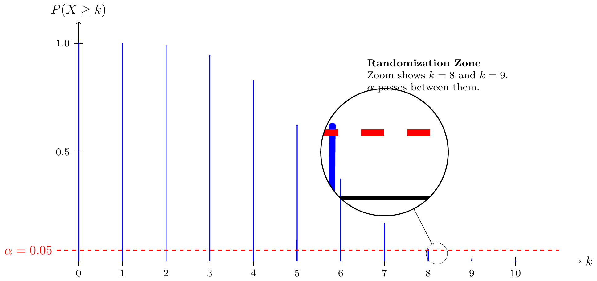
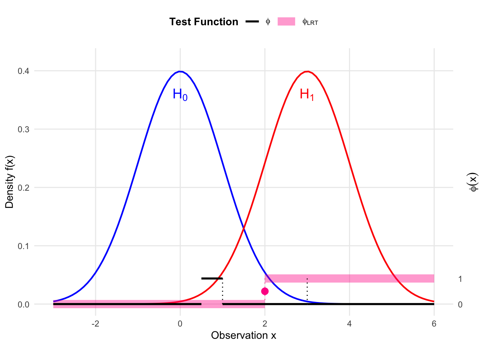
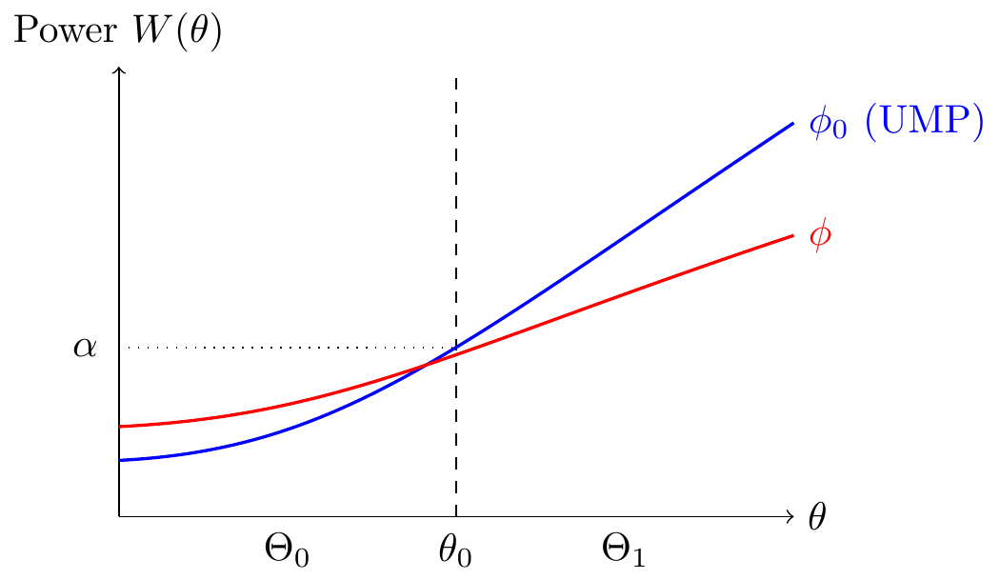
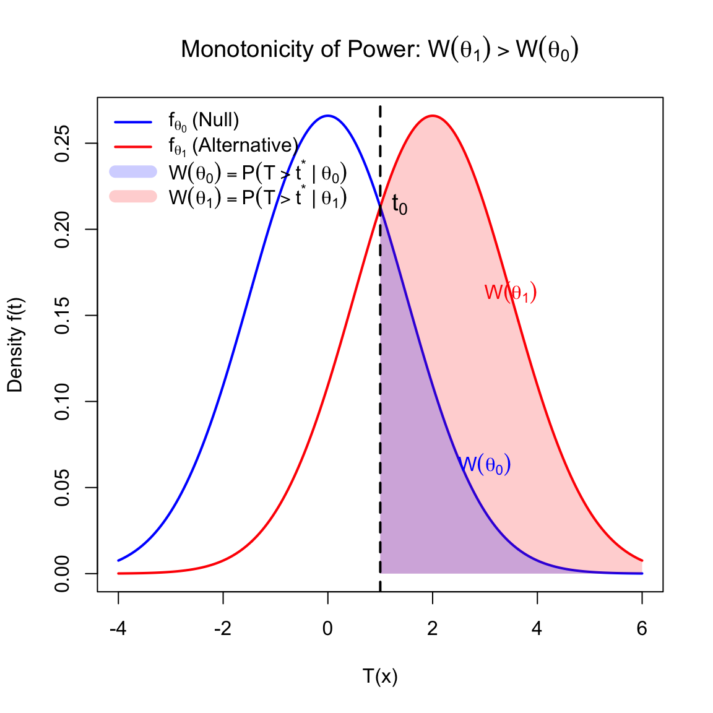
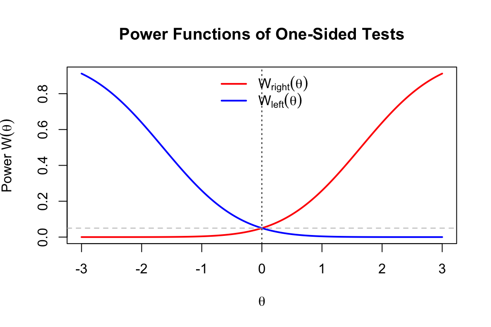
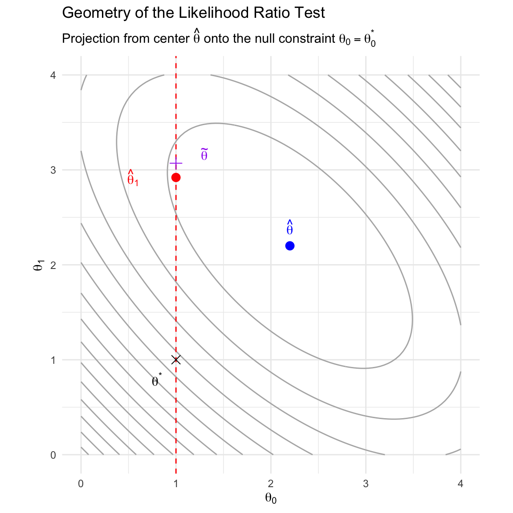
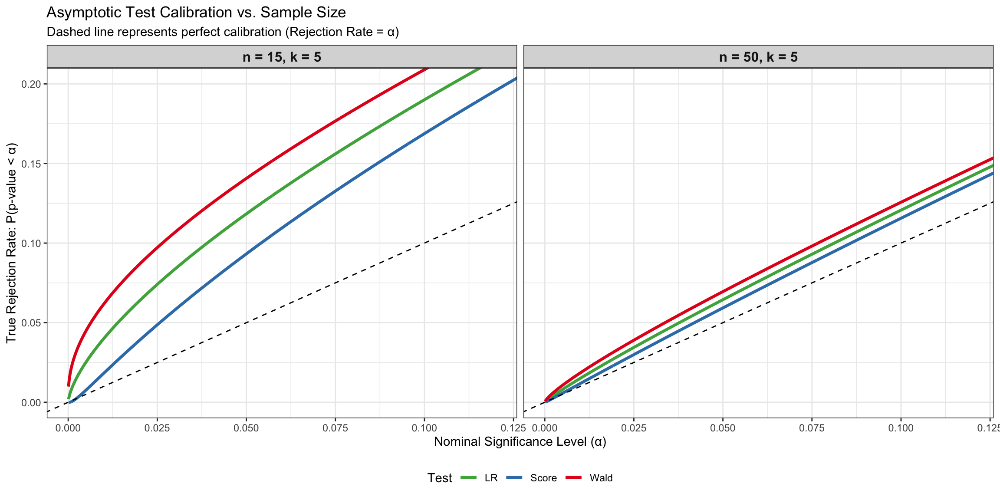

7 Likelihood-based Hypothesis Testing
7.1 Formulation for Hypothesis Testing
7.1.1 Hypothesis
We formulate the problem of hypothesis testing as deciding between two competing claims about a parameter \(\theta\):
\[ H_0: \theta \in \Theta_0 \quad \text{(Null Hypothesis)} \]
\[ H_1: \theta \in \Theta_1 \quad \text{(Alternative Hypothesis)} \]
Definition 7.1 (Simple and Composite Hypotheses) A hypothesis is called simple if it specifies a single value for the parameter (e.g., \(\Theta_0\) contains only one point). It is called composite if it specifies more than one value.
Example 7.1 (Normal Mean Test) Let \(X_1, \dots, X_n \overset{iid}{\sim} N(\mu, \sigma^2)\).
- If \(\sigma^2\) is known, \(H_0: \mu = \mu_0\) is a simple hypothesis.
- If \(\sigma^2\) is unknown, \(H_0: \mu = \mu_0\) is a composite hypothesis (since \(\sigma^2\) can vary).
7.1.2 Test Functions
A test is defined by a critical region \(C_\alpha\) such that we reject \(H_0\) if the data \(x \in C_\alpha\). Equivalently, we can define a test function \(\phi(x)\) representing the probability of rejecting \(H_0\) given data \(x\).
- A non-randomized test is given as follows:
\[ \phi(x) = I(x \in C_\alpha) = \begin{cases} 1 & \text{if } x \in C_\alpha \text{ (Reject } H_0 \text{)} \\ 0 & \text{otherwise} \end{cases} \]
A randomized test, \(\phi(x)\) can take values in \([0, 1]\), which can be expressed typically as follows:
\[ \phi(x) = \begin{cases} 1 & \text{if } x \in C_1 \\ \gamma & \text{if } x \in C_* \\ 0 & \text{otherwise} \end{cases} \]
where:
- \(C_1\) is the region where we strictly reject \(H_0\).
- \(C_*\) is the boundary region (often where \(T(x) = k\)) where we reject \(H_0\) with probability \(\gamma\).
More generally, \(\phi(x)\) is just a function of \(x\) with values in \([0,1]\), which represents the probability that we will reject \(H_0\).
Example 7.2 (Randomized Test for Binomial) Let \(X \sim \text{Bin}(n=10, \theta)\). Consider testing \(H_0: \theta = 1/2\) vs \(H_1: \theta > 1/2\) with target size \(\alpha = 0.05\).
Suppose we choose a critical region \(X \ge k\).
- If \(k=9\), \(P(X \ge 9 | \theta=0.5) \approx 0.0107\).
- If \(k=8\), \(P(X \ge 8 | \theta=0.5) \approx 0.0547\).
Since we cannot achieve exactly 0.05 with a non-randomized test (the survival function jumps over 0.05), we must use a randomized test function.
The randomized test is defined as:
\[ \phi(x) = \begin{cases} 1 & \text{if } x \in C_1 \text{ (i.e., } x \ge 9) \\ \gamma & \text{if } x \in C_* \text{ (i.e., } x = 8) \\ 0 & \text{otherwise} \end{cases} \]
From the figure, we see that \(\alpha = 0.05\) lies between \(P(X \ge 9)\) and \(P(X \ge 8)\). We always reject the “tail” where probabilities are strictly less than \(\alpha\) (here \(x \ge 9\)). At the boundary \(x=8\), we cannot reject with probability 1 (which would give total size 0.0547), nor with probability 0 (which would give total size 0.0107).
We choose \(\gamma\) to bridge this gap:
\[ \begin{aligned} \alpha &= P(X \ge 9) + \gamma \cdot P(X = 8) \\ 0.05 &= 0.01074 + \gamma \cdot (P(X \ge 8) - P(X \ge 9)) \\ 0.05 &= 0.01074 + \gamma \cdot (0.05469 - 0.01074) \end{aligned} \]
Solving for \(\gamma\):
\[ \gamma = \frac{0.05 - 0.01074}{0.04395} \approx \frac{39}{44} \approx 0.89 \]
7.1.3 Size
Definition 7.2 (Size of a Test) The size of a test \(\phi(x)\) is the maximum probability of rejecting the null hypothesis when it is true:
\[ \text{Size}(\phi) = \sup_{\theta \in \Theta_0} W_\phi(\theta) = \sup_{\theta \in \Theta_0} E_\theta[\phi(X)] \]
7.1.4 Power
We distinguish between the power function varying over parameters and the power metric of a specific test.
- Power Function (\(W_\phi(\theta)\))
The probability of rejecting \(H_0\) as a function of the parameter \(\theta\):
\[ W_\phi(\theta) = E_\theta[\phi(X)] \]
- Power of the Test (\(\text{Power}(\phi)\))
In the context of a specific alternative hypothesis (e.g., \(H_1: \theta = \theta_1\)), we define the power as a scalar functional of \(\phi\):
\[ \text{Power}(\phi) = E_{\theta_1}[\phi(X)] \]
Ideally, we want:
- \(W_\phi(\theta) \le \text{Size}(\phi)\) for all \(\theta \in \Theta_0\) (Control Type I error).
- \(\text{Power}(\phi)\) to be as large as possible (Maximize sensitivity to \(H_1\)).
Code
library(ggplot2)
# 1. Define Parameters
mu0 <- 0
mu1 <- 3
sigma <- 1
c_val <- 1.5 # Critical value
gamma_val <- 0.5 # Randomization constant
# 2. Scaling Constants
max_dens <- dnorm(mu0, mean = mu0, sd = sigma)
y_limit <- max_dens * 1.1
phi_scale <- 0.1 * y_limit
# 3. Define the Test Function phi(x) (Single Test)
# Step function: 0 -> 1 at c_val
df_phi <- data.frame(
x_start = c(-3, c_val),
x_end = c(c_val, 6),
y_start = c(0, phi_scale),
y_end = c(0, phi_scale)
)
ggplot() +
# --- Layer 1: Densities (Solid Lines, No Fill) ---
# H0: Normal(0, 1) - Blue (Cool)
stat_function(fun = dnorm, args = list(mean = mu0, sd = sigma),
color = "blue", size = 0.8) +
# H1: Normal(3, 1) - Red (Hot)
stat_function(fun = dnorm, args = list(mean = mu1, sd = sigma),
color = "red", size = 0.8) +
# --- Layer 2: Test Function phi(x) (Thick Pink Line) ---
# The horizontal segments
geom_segment(data = df_phi,
aes(x = x_start, xend = x_end, y = y_start, yend = y_end),
color = "deeppink", size = 2.5, alpha = 0.5) +
# The vertical threshold line
geom_segment(aes(x = c_val, xend = c_val, y = 0, yend = phi_scale),
linetype = "dotted", color = "deeppink", size = 0.8) +
# Points at discontinuity
geom_point(aes(x = c_val, y = gamma_val * phi_scale),
color = "deeppink", size = 3) +
geom_point(aes(x = c_val, y = 0), size = 3, shape = 21, fill = "white", color = "deeppink") +
geom_point(aes(x = c_val, y = phi_scale), size = 3, shape = 21, fill = "white", color = "deeppink") +
# --- Layer 3: Annotations ---
# Gamma label
annotate("text", x = c_val + 0.2, y = gamma_val * phi_scale,
label = expression(gamma), hjust = 0, fontface = "bold", color = "deeppink") +
# H0 / H1 Labels
annotate("text", x = mu0, y = max_dens * 0.9,
label = expression(H[0]), color = "blue", size = 5) +
annotate("text", x = mu1, y = max_dens * 0.9,
label = expression(H[1]), color = "red", size = 5) +
# Critical Value Label
annotate("text", x = c_val, y = -0.01, label = "c", vjust = 1) +
# --- Layer 4: Scales ---
scale_y_continuous(
name = "Density f(x)",
limits = c(-0.02, y_limit),
expand = c(0, 0),
# Secondary Axis for phi
sec.axis = sec_axis(~ . / phi_scale,
name = expression(phi(x)),
breaks = c(0, 1))
) +
scale_x_continuous(name = "Observation x", limits = c(-3, 6)) +
theme_minimal() +
theme(
axis.title.y.right = element_text(angle = 90, vjust = 0.5),
panel.grid.minor = element_blank()
)
7.2 The Neyman-Pearson Lemma
Consider testing a simple null against a simple alternative: \(H_0: \theta = \theta_0\) vs \(H_1: \theta = \theta_1\).
We define the Likelihood Ratio \(\Lambda(x)\) as:
\[ \Lambda(x) = \frac{f_1(x)}{f_0(x)} = \frac{f(x; \theta_1)}{f(x; \theta_0)} \]
Definition 7.3 (Likelihood Ratio Test (LRT)) A test \(\phi(x)\) is a Likelihood Ratio Test if it has the form:
\[ \phi_{\text{LRT}}(x) = \begin{cases} 1 & \text{if } \Lambda(x) > k \\ \gamma(x) & \text{if } \Lambda(x) = k \\ 0 & \text{if } \Lambda(x) < k \end{cases} \]
where \(k \ge 0\) is a constant and \(0 \le \gamma(x) \le 1\).
7.2.1 Neyman-Pearson Lemma
Theorem 7.1 (Neyman-Pearson Lemma)
Optimality: For any \(k\) and \(\gamma(x)\), the LRT \(\phi_0(x)\) defined above has maximum power among all tests whose size is less than or equal to the size of \(\phi_0(x)\).
Existence: Given \(\alpha \in (0, 1)\), there exist constants \(k\) and \(\gamma_0\) such that the LRT defined by this \(k\) and \(\gamma(x) = \gamma_0\) has size exactly \(\alpha\).
Uniqueness: If a test \(\phi\) has size \(\alpha\) and is of maximum power among all tests of size \(\alpha\), then \(\phi\) is necessarily an LRT, except possibly on a set of measure zero under \(H_0\) and \(H_1\).
7.2.2 A Derivation with The Lagrange Multiplier Approach
To make the optimality of the Likelihood Ratio Test (LRT) intuitive, we can frame the search for the best test function \(\phi(x)\) as a constrained optimization problem.
We want to maximize the power of the test:
\[ \text{Power}(\phi) = \int \phi(x) f_1(x) dx \]
subject to the constraint on the size of the test \(\alpha\):
\[ \text{Size}(\phi) = \int \phi(x) f_0(x) dx = \alpha \]
Using the method of Lagrange multipliers, we define the objective function \(L\) with a multiplier \(k\):
\[ L(\phi, k) = \int \phi(x) f_1(x) dx - k \left( \int \phi(x) f_0(x) dx - \alpha \right) \]
Rearranging the terms inside the integral, we get:
\[ L(\phi, k) = \int \phi(x) [f_1(x) - k f_0(x)] dx + k\alpha \]
To maximize \(L\) with respect to \(\phi(x)\), we look at the integrand. Since \(0 \le \phi(x) \le 1\), we should choose \(\phi(x)\) to be as large as possible whenever its coefficient is positive, and as small as possible whenever its coefficient is negative:
- If \(f_1(x) - k f_0(x) > 0\), set \(\phi(x) = 1\).
- If \(f_1(x) - k f_0(x) < 0\), set \(\phi(x) = 0\).
- If \(f_1(x) - k f_0(x) = 0\), the value of \(\phi(x)\) does not affect the integral (this is where \(\gamma\) comes in).
This decision rule is equivalent to:
\[ \phi(x) = \begin{cases} 1 & \text{if } \frac{f_1(x)}{f_0(x)} > k \\ 0 & \text{if } \frac{f_1(x)}{f_0(x)} < k \end{cases} \]
This is precisely the form of the Likelihood Ratio Test. The “shadow price” or Lagrange multiplier \(k\) represents the critical threshold that balances the gain in power against the cost of increasing the Type I error.
7.2.3 Proof of NP Lemma
Proof. Proof of (a) Optimality: Let \(\phi_{\text{LRT}}\) be the LRT with size \(\alpha\), and \(\phi\) be any other test with size \(\le \alpha\). Define the function \(U(x)\) as the difference in test functions weighted by the linear combination of densities:
\[ U(x) = (\phi_\text{LRT}(x) - \phi(x))(f_1(x) - k f_0(x)) \]
We analyze the sign of \(U(x)\) by looking at the sign of its two factors in three cases:
- If \(f_1(x) - k f_0(x) > 0\) (implies \(\Lambda(x) > k\)). Since \(\phi_{\text{LRT}}(x) = 1\) and \(\phi(x) \le 1\), we have:
\[ \begin{aligned} \phi_{\text{LRT}}(x) - \phi(x) &\ge 0 \\ U(x) = (\phi_{\text{LRT}}(x) - \phi(x))(f_1(x) - k f_0(x)) &\ge 0 \end{aligned} \]
- If \(f_1(x) - k f_0(x) < 0\) (implies \(\Lambda(x) < k\)). Since \(\phi_{\text{LRT}}(x) = 0\) and \(\phi(x) \ge 0\), we have:
\[ \begin{aligned} \phi_{\text{LRT}}(x) - \phi(x) &\le 0 \\ U(x) = (\phi_{\text{LRT}}(x) - \phi(x))(f_1(x) - k f_0(x)) &\ge 0 \end{aligned} \]
- If \(f_1(x) - k f_0(x) = 0\). The product is zero regardless of the test functions.
\[ U(x) = 0 \]
Combining these cases, we conclude that the product is non-negative for all \(x\):
\[ U(x) = (\phi_{\text{LRT}}(x) - \phi(x))(f_1(x) - k f_0(x)) \ge 0 \]
Therefore, integrating \(U(x)\) over the entire domain:
\[ \int U(x) dx = \int (\phi_{\text{LRT}}(x) - \phi(x))(f_1(x) - k f_0(x)) dx \ge 0 \]
Expanding the integral:
\[ \int \phi_{\text{LRT}}(x) f_1(x) \, dx - \int \phi(x) f_1(x) \, dx - k \left( \int \phi_{\text{LRT}}(x) f_0(x) \, dx - \int \phi(x) f_0(x) \, dx \right) \ge 0 \] Converting to expectations:
\[ E_{\theta_1}[\phi_{\text{LRT}}] - E_{\theta_1}[\phi] \ge k (E_{\theta_0}[\phi_{\text{LRT}}] - E_{\theta_0}[\phi]) \]
Since \(E_{\theta_0}[\phi_{\text{LRT}}] =\text{Size}(\phi_{\text{LRT}})= \alpha\) and we require that \(E_{\theta_0}[\phi] = \text{Size}(\phi)\le \alpha\),
\[
E_{\theta_0}[\phi_{\text{LRT}}] - E_{\theta_0}[\phi] \ge 0
\]
Thereore, given that \(k \ge 0\):
\[ \text{Power}(\phi_{\text{LRT}}) \ge \text{Power}(\phi) \]
Proof of (b) Existence:
Let \(G(k) = P_{\theta_0}(\Lambda(X) \le k)\). \(G(k)\) is the cumulative distribution function of the random variable \(\Lambda(X)\), so it is non-decreasing. We seek \(k_0\) such that \(1 - G(k_0) \approx \alpha\). Because of discrete jumps, we might not hit \(\alpha\) exactly. We choose \(k_0\) such that:
\[ P_{\theta_0}(\Lambda(X) > k_0) \le \alpha \le P_{\theta_0}(\Lambda(X) \ge k_0) \]
Set \(\gamma_0 = \frac{\alpha - P_{\theta_0}(\Lambda(X) > k_0)}{P_{\theta_0}(\Lambda(X) = k_0)}\).
Proof of (c) Uniqueness
Let \(\phi_{\text{LRT}}\) be the LRT of size \(\alpha\). Suppose there exists another test \(\phi\) that is also Most Powerful (MP) with size \(\le \alpha\). We wish to show that \(\phi(x) = \phi_{\text{LRT}}(x)\) for almost all \(x\) where \(f_1(x) \ne k f_0(x)\).
As established in the optimality proof, the function: \[ U(x) = (\phi_{\text{LRT}}(x) - \phi(x))(f_1(x) - k f_0(x)) \] is non-negative for all \(x\). Since both tests are MP, they have the same power: \(E_{\theta_1}[\phi_{\text{LRT}}] = E_{\theta_1}[\phi]\).
From the integral of \(U(x)\), we have: \[ 0 \le \int U(x) dx = (E_{\theta_1}[\phi_{\text{LRT}}] - E_{\theta_1}[\phi]) - k(E_{\theta_0}[\phi_{\text{LRT}}] - E_{\theta_0}[\phi]) \]
Substituting the equality of power: \[ 0 \le -k(\alpha - E_{\theta_0}[\phi]) \]
Since \(k > 0\) and \(E_{\theta_0}[\phi] \le \alpha\), the term \(-k(\alpha - E_{\theta_0}[\phi])\) is \(\le 0\). The only way for the integral of a non-negative function \(U(x)\) to be \(\le 0\) is if the integral is exactly zero: \[ \int (\phi_{\text{LRT}}(x) - \phi(x))(f_1(x) - k f_0(x)) \, dx = 0 \]
For the integral of a non-negative function to be zero, the integrand must be zero almost everywhere: \[ (\phi_{\text{LRT}}(x) - \phi(x))(f_1(x) - k f_0(x)) = 0 \quad \text{a.e.} \]
This implies that for any \(x\) where \(f_1(x) - k f_0(x) \ne 0\), we must have: \[ \phi_{\text{LRT}}(x) - \phi(x) = 0 \implies \phi(x) = \phi_{\text{LRT}}(x) \]
Thus, the test is unique except possibly on the boundary set \(\{x : f_1(x) = k f_0(x)\}\). If \(P_{\theta_0}(\Lambda(X) = k) = 0\) (as in continuous distributions like the Normal), the MP test is unique almost everywhere.
Code
library(ggplot2)
# 1. Define Parameters
mu0 <- 0
mu1 <- 3
sigma <- 1
c_lrt <- 2
gamma_val <- 0.5
# Scaling constants
max_dens <- dnorm(mu0, mean = mu0, sd = sigma)
y_limit <- max_dens * 1.1
phi_scale <- 0.1 * y_limit
# 2. Define Test Functions Data
df_lrt <- data.frame(
x_start = c(-3, c_lrt),
x_end = c(c_lrt, 6),
y_val = c(0, phi_scale),
Test = "phi[LRT]"
)
df_other <- data.frame(
x_start = c(-3, 0.5, 1, 3),
x_end = c(0.5, 1, 3,6),
y_val = c(0, phi_scale, 0, 0),
Test = "phi"
)
ggplot() +
# --- Layer 1: Densities (Solid Lines, No Fill) ---
stat_function(fun = dnorm, args = list(mean = mu0, sd = sigma),
color = "blue", size = 0.8) +
stat_function(fun = dnorm, args = list(mean = mu1, sd = sigma),
color = "red", size = 0.8) +
# --- Layer 2: Test Functions (Segments) ---
# 2a. LRT Segments (Thick, Transparent Pink)
geom_segment(data = df_lrt,
aes(x = x_start, xend = x_end,
y = y_val, yend = y_val,
color = Test, linetype = Test, size = Test),
alpha = 0.4) +
# Vertical connector for LRT
geom_segment(aes(x = c_lrt, xend = c_lrt, y = 0, yend = phi_scale),
color = "deeppink", linetype = "dotted", size = 0.5, alpha = 0.6) +
# 2b. Other Test Segments (Thin Black Opaque)
geom_segment(data = df_other,
aes(x = x_start, xend = x_end,
y = y_val, yend = y_val,
color = Test, linetype = Test, size = Test)) +
# Vertical connectors for Other Test
geom_segment(aes(x = 1, xend = 1, y = 0, yend = phi_scale),
color = "black", linetype = "dotted", size = 0.5) +
geom_segment(aes(x = 3, xend = 3, y = 0, yend = phi_scale),
color = "black", linetype = "dotted", size = 0.5) +
# --- Layer 3: Annotations ---
# LRT Gamma Point (Pink)
geom_point(aes(x = c_lrt, y = gamma_val * phi_scale),
color = "deeppink", size = 3) +
# Density Labels
annotate("text", x = mu0, y = max_dens * 0.9,
label = expression(H[0]), color = "blue", size = 5) +
annotate("text", x = mu1, y = max_dens * 0.9,
label = expression(H[1]), color = "red", size = 5) +
# --- Layer 4: Scales and Legend ---
scale_y_continuous(
name = "Density f(x)", limits = c(-0.02, y_limit), expand = c(0, 0),
sec.axis = sec_axis(~ . / phi_scale, name = expression(phi(x)), breaks = c(0, 1))
) +
scale_x_continuous(name = "Observation x", limits = c(-3, 6)) +
# Manual Legend Controls (FIXED using named vectors for labels)
scale_color_manual(name = "Test Function",
values = c("phi[LRT]" = "deeppink", "phi" = "black"),
labels = c("phi[LRT]" = expression(phi[LRT]), "phi" = expression(phi))) +
scale_linetype_manual(name = "Test Function",
values = c("phi[LRT]" = "solid", "phi" = "solid"),
labels = c("phi[LRT]" = expression(phi[LRT]), "phi" = expression(phi))) +
scale_size_manual(name = "Test Function",
values = c("phi[LRT]" = 4, # Extra Thick
"phi" = 1), # Thin
labels = c("phi[LRT]" = expression(phi[LRT]), "phi" = expression(phi))) +
theme_minimal() +
theme(
legend.position = "top",
legend.title = element_text(face = "bold"),
axis.title.y.right = element_text(angle = 90, vjust = 0.5),
panel.grid.minor = element_blank()
)
7.3 Uniformly Most Powerful (UMP) Tests via MLR
When the alternative hypothesis is composite (\(H_1: \theta \in \Theta_1\)), we seek a test that is “best” for all \(\theta \in \Theta_1\).
Definition 7.4 (Uniformly Most Powerful Test) A test \(\phi_0(x)\) of size \(\alpha\) is Uniformly Most Powerful (UMP) if:
- \(E_{\theta}[\phi_0(X)] \le \alpha\) for all \(\theta \in \Theta_0\).
- For any other test \(\phi(x)\) satisfying (1), \(E_{\theta}[\phi_0(X)] \ge E_{\theta}[\phi(X)]\) for all \(\theta \in \Theta_1\).

7.3.1 Monotone Likelihood Ratio (MLR)
Definition 7.5 (Monotone Likelihood Ratio) A family of densities \(\{f(x; \theta)\}\) has a Monotone Likelihood Ratio (MLR) with respect to a statistic \(T(x)\) if for any \(\theta_1 > \theta_0\), the ratio:
\[ \frac{f(x; \theta_1)}{f(x; \theta_0)} \]
is a non-decreasing function of \(T(x)\).
Common examples include the one-parameter Exponential Family: \(f(x; \theta) = h(x) c(\theta) \exp\{w(\theta) T(x)\}\). If \(w(\theta)\) is increasing, the family has MLR w.r.t \(T(x)\).
Example 7.3 Let \(X_1, \dots, X_n \overset{iid}{\sim} \text{Exp}(\theta)\) with pdf \(f(x) = \frac{1}{\theta} e^{-x/\theta}\). Test \[ H_0: \theta = \theta_0 \text{ vs } H_1: \theta > \theta_0. \]
The Likelihood Ratio for \(\theta_1 > \theta_0\) is:
\[ \frac{L(\theta_1)}{L(\theta_0)} = \frac{\theta_1^{-n} e^{-\sum x_i / \theta_1}}{\theta_0^{-n} e^{-\sum x_i / \theta_0}} = \left(\frac{\theta_0}{\theta_1}\right)^n \exp \left\{ \left( \frac{1}{\theta_0} - \frac{1}{\theta_1} \right) \sum x_i \right\} \]
Since \(\theta_1 > \theta_0\), the term \((\frac{1}{\theta_0} - \frac{1}{\theta_1})\) is positive. Thus, \(\Lambda(x)\) is an increasing function of the sum \(T (x) = \sum x_i\).
Rejecting for large \(\Lambda(x)\) is equivalent to rejecting for \(T(x)=\sum x_i > C\).
Under \(H_0\), \(X_i \sim \text{Exp}(\theta_0)\), which is equivalent to \(\text{Gamma}(1, \theta_0)\). By the reproductive property of the Gamma distribution:
\[ T = \sum_{i=1}^n X_i \sim \text{Gamma}(n, \theta_0) \]
Alternatively, using the relationship with the Chi-square distribution:
\[ \frac{2T}{\theta_0} \sim \chi^2_{2n} \]
To find \(C\) for a significance level \(\alpha\), we set \(P(T > C | \theta_0) = \alpha\). Using the \(\chi^2\) transformation:
\[ P\left(\frac{2T}{\theta_0} > \frac{2C}{\theta_0}\right) = \alpha \implies \frac{2C}{\theta_0} = \chi^2_{2n, \alpha} \]
Thus, the critical value is:
\[ C = \frac{\theta_0}{2} \chi^2_{2n, \alpha} \]
where \(\chi^2_{2n, \alpha}\) is the upper-\(\alpha\) quantile of a Chi-square distribution with \(2n\) degrees of freedom.
Important
We note that the value \(C\) does not depend on \(\theta_1\).
7.3.2 Karlin-Rubin Theorem
Theorem 7.2 (Chebyshev’s Association Inequality) Let \(X\) be a random variable, and let \(f(x)\) and \(g(x)\) be two functions that are both non-decreasing (or both non-increasing). Then: \[ E[f(X)g(X)] \ge E[f(X)] \cdot E[g(X)] \] Equivalently, the covariance is non-negative: \(\text{Cov}(f(X), g(X)) \ge 0\).
Proof. Let \(Y\) be an independent copy of \(X\) (i.e., \(X\) and \(Y\) are i.i.d.). Consider the quantity: \[ \Delta = (f(X) - f(Y))(g(X) - g(Y)) \]
Since \(f\) and \(g\) are both non-decreasing (or both non-increasing), the terms \((f(X) - f(Y))\) and \((g(X) - g(Y))\) always share the same sign. Thus, their product is always non-negative: \[ \Delta \ge 0 \]
Taking the expectation: \[ E[(f(X) - f(Y))(g(X) - g(Y))] \ge 0 \]
Expanding the product and using linearity of expectation: \[ E[f(X)g(X)] - E[f(X)g(Y)] - E[f(Y)g(X)] + E[f(Y)g(Y)] \ge 0 \]
Since \(X\) and \(Y\) are i.i.d.:
- \(E[f(Y)g(Y)] = E[f(X)g(X)]\)
- \(E[f(X)g(Y)] = E[f(X)]E[g(Y)] = E[f(X)]E[g(X)]\) (Independence)
- \(E[f(Y)g(X)] = E[f(Y)]E[g(X)] = E[f(X)]E[g(X)]\) (Independence)
Substituting these back yields: \[ 2E[f(X)g(X)] - 2E[f(X)]E[g(X)] \ge 0 \]
Dividing by 2 proves the inequality: \[ E[f(X)g(X)] \ge E[f(X)]E[g(X)] \]
Theorem 7.3 (Karlin-Rubin Theorem) Suppose \(X\) has a distribution from a family with MLR with respect to \(T(X)\), and the distribution of \(T(X)\) is continuous. Consider testing \(H_0: \theta \le \theta^*\) vs \(H_1: \theta > \theta^*\).
The test:
\[ \phi(x) = \begin{cases} 1 & \text{if } T(x) > t^* \\ 0 & \text{if } T(x) \le t^* \end{cases} \]
where \(t^*\) is determined by \(P_{\theta^*}(T(X) > t^*) = \alpha\), is the UMP size \(\alpha\) test.
Proof. The Test: Define the test \(\phi^*(x)\) as:
\[ \phi^*(x) = \begin{cases} 1 & \text{if } T(x) > t^* \\ 0 & \text{if } T(x) \le t^* \end{cases} \]
where \(t^*\) is determined such that the power at the boundary is \(\alpha\), i.e., \(W_{\phi^*}(\theta^*) = \alpha\).
Monotonicity of the Power Function
We first establish that \(W_{\phi^*}(\theta)\) is non-decreasing over the entire parameter space. Let \(\theta_0\) and \(\theta_1\) be any two arbitrary parameter values such that \(\theta_1 > \theta_0\). Define the test indicator function \(h(t) = \mathbb{I}(t > t^*)\) and the likelihood ratio \(\Lambda(t) = \frac{f_{\theta_1}(t)}{f_{\theta_0}(t)}\).
Because of the Monotone Likelihood Ratio (MLR) property, \(\Lambda(t)\) is a non-decreasing function of \(t\). The indicator function \(h(t)\) is clearly non-decreasing.
The power at \(\theta_1\) can be written as an integral involving the density under \(\theta_0\): \[ W_{\phi^*}(\theta_1) = \int_{-\infty}^{\infty} h(t) f_{\theta_1}(t) \, dt = \int_{-\infty}^{\infty} h(t) \frac{f_{\theta_1}(t)}{f_{\theta_0}(t)} f_{\theta_0}(t) \, dt = \int_{-\infty}^{\infty} h(t) \Lambda(t) f_{\theta_0}(t) \, dt \]
This integral is the expectation \(E_{\theta_0}[h(T) \Lambda(T)]\). By Chebyshev’s Association Inequality (Covariance Inequality), since both \(h(t)\) and \(\Lambda(t)\) are non-decreasing, the expectation of their product is at least the product of their expectations: \[ \int_{-\infty}^{\infty} h(t) \Lambda(t) f_{\theta_0}(t) \, dt \ge \left( \int_{-\infty}^{\infty} h(t) f_{\theta_0}(t) \, dt \right) \left( \int_{-\infty}^{\infty} \Lambda(t) f_{\theta_0}(t) \, dt \right) \]
We evaluate the two integrals on the right-hand side:
- The first term is the power at \(\theta_0\): \(\int h(t) f_{\theta_0}(t) \, dt = W_{\phi^*}(\theta_0)\).
- The second term integrates the likelihood ratio: \(\int \frac{f_{\theta_1}(t)}{f_{\theta_0}(t)} f_{\theta_0}(t) \, dt = \int f_{\theta_1}(t) \, dt = 1\).
Substituting these back, we get: \[ W_{\phi^*}(\theta_1) \ge W_{\phi^*}(\theta_0) \cdot 1 \] Thus, \(W_{\phi^*}(\theta)\) is non-decreasing for any \(\theta_1 > \theta_0\).
Size Control
For the composite null \(H_0: \theta \le \theta^*\), we require the size to be at most \(\alpha\). Since \(W_{\phi^*}(\theta)\) is non-decreasing (established in Step 1) and we explicitly set \(W_{\phi^*}(\theta^*) = \alpha\):
\[ W_{\phi^*}(\theta) \le W_{\phi^*}(\theta^*) = \alpha \quad \text{for all } \theta \le \theta^* \]
This confirms \(\phi^*\) is a valid level-\(\alpha\) test.
Uniformly Most Powerful (UMP) via Neyman-Pearson Lemma
Let \(\phi'(x)\) be any other valid test of size \(\alpha\) for \(H_0\). This implies its power at the boundary satisfies \(W_{\phi'}(\theta^*) \le \alpha\).
Consider any specific alternative \(\theta_1 > \theta^*\). Because the family has MLR, the likelihood ratio \(\Lambda(x) = \frac{f_{\theta_1}(x)}{f_{\theta^*}(x)}\) is increasing in \(T(x)\). Therefore, the test \(\phi^*\) (which rejects for large \(T\)) is identified by the Neyman-Pearson Lemma as the Most Powerful (MP) test for the simple hypotheses \(\theta^*\) vs \(\theta_1\).
Comparing the power of \(\phi^*\) and \(\phi'\) at this specific alternative \(\theta_1\): \[ W_{\phi^*}(\theta_1) \ge W_{\phi'}(\theta_1) \] Since \(\theta_1\) was an arbitrary value strictly greater than \(\theta^*\), this inequality holds for all \(\theta > \theta^*\). Thus, \(\phi^*\) is the UMP test.

Example 7.4 (UMP Test for Exponential/Gamma) Let \(X_1, \dots, X_n \overset{iid}{\sim} \text{Exp}(\theta)\) with pdf \(f(x) = \frac{1}{\theta} e^{-x/\theta}\). Test \(H_0: \theta = \theta_0\) vs \(H_1: \theta > \theta_0\). The sum \(T = \sum X_i\) is a sufficient statistic, and \(T \sim \text{Gamma}(n, \theta)\).
The Likelihood Ratio for \(\theta_1 > \theta_0\) is:
\[ \frac{L(\theta_1)}{L(\theta_0)} = \frac{\theta_1^{-n} e^{-\sum x_i / \theta_1}}{\theta_0^{-n} e^{-\sum x_i / \theta_0}} = \left(\frac{\theta_0}{\theta_1}\right)^n \exp \left\{ \left( \frac{1}{\theta_0} - \frac{1}{\theta_1} \right) \sum x_i \right\} \]
Since \(\theta_1 > \theta_0\), the term \((\frac{1}{\theta_0} - \frac{1}{\theta_1})\) is positive. Thus, \(\Lambda(x)\) is an increasing function of \(\sum x_i\).
Rejecting for large \(\Lambda(x)\) is equivalent to rejecting for \(\sum x_i > C\).
\(T \sim \text{Gamma}(n, \theta)\)
This test form does not depend on the specific \(\theta_1\), so it is UMP for all \(\theta > \theta_0\).
7.4 Non-Existence of UMP for Two-Sided Hypotheses
For testing a point null hypothesis \(H_0: \theta = \theta^*\) against a two-sided alternative \(H_1: \theta \neq \theta^*\) in a family with a monotone likelihood ratio (e.g., Normal, Exponential), a Uniformly Most Powerful (UMP) test generally does not exist. The non-existence proof relies on the uniqueness of the Most Powerful (MP) test derived from the Neyman-Pearson Lemma:
Conflict of Optimal Regions: Consider a specific alternative \(\theta_1 > \theta^*\). By the Neyman-Pearson Lemma, the MP test \(\phi_1\) rejects \(H_0\) for large values of the sufficient statistic \(T(\mathbf{X}) > k_1\). Conversely, consider an alternative \(\theta_2 < \theta^*\). The MP test \(\phi_2\) rejects \(H_0\) for small values of the statistic \(T(\mathbf{X}) < k_2\).
Failure of Uniformity: A UMP test \(\phi^*\) would need to be the MP test for every \(\theta \in H_1\).
- For \(\phi^*\) to be most powerful against \(\theta_1\), it must be equivalent to \(\phi_1\) (rejecting in the right tail).
- For \(\phi^*\) to be most powerful against \(\theta_2\), it must be equivalent to \(\phi_2\) (rejecting in the left tail).
Biased Power Function: The MP test \(\phi_1\) (Right-Sided) has a power function that drops below the size \(\alpha\) for values \(\theta < \theta^*\). Therefore, it cannot be the most powerful test for \(\theta_2\), as there exists a valid test (e.g., \(\phi_2\)) with power strictly greater than \(\alpha\) at \(\theta_2\).
Since no single critical region can simultaneously maximize power for both \(\theta > \theta^*\) and \(\theta < \theta^*\), no UMP test exists. We typically restrict our search to Unbiased tests (UMPU) to resolve this.

Example 7.5 (Non-Existence of UMP for the Normal Mean) Let \(X_1, \dots, X_n \overset{i.i.d.}{\sim} N(\mu, \sigma^2)\) with known variance \(\sigma^2\). We wish to test \(H_0: \mu = \mu_0\) against \(H_1: \mu \neq \mu_0\) at significance level \(\alpha\).
Because the Normal distribution belongs to the exponential family, the sufficient statistic \(\overline{X}\) possesses the Monotone Likelihood Ratio (MLR) property with respect to \(\mu\). By the Karlin-Rubin Theorem, this guarantees the existence of UMP tests for one-sided alternatives:
- Right-Tailed UMP (\(\phi_R\)): For \(H_1: \mu > \mu_0\), the UMP test of size \(\alpha\) rejects \(H_0\) when \(\frac{\sqrt{n}(\overline{X} - \mu_0)}{\sigma} > z_{1-\alpha}\).
- Left-Tailed UMP (\(\phi_L\)): For \(H_1: \mu < \mu_0\), the UMP test of size \(\alpha\) rejects \(H_0\) when \(\frac{\sqrt{n}(\overline{X} - \mu_0)}{\sigma} < -z_{1-\alpha}\).
Now consider the standard Two-Sided Test (\(\phi_{Two}\)) of size \(\alpha\), which splits the rejection region to cover both directions. It rejects when \(\left| \frac{\sqrt{n}(\overline{X} - \mu_0)}{\sigma} \right| > z_{1-\alpha/2}\).
The Power Deficit: Because \(z_{1-\alpha/2} > z_{1-\alpha}\) (e.g., for \(\alpha = 0.05\), \(1.96 > 1.645\)), the two-sided test requires more extreme evidence to reject in either specific direction.
- For any true mean \(\mu > \mu_0\), the two-sided test has strictly lower power than the right-tailed UMP test.
- For any true mean \(\mu < \mu_0\), the two-sided test has strictly lower power than the left-tailed UMP test.
Since \(\phi_{Two}\) is beaten by \(\phi_R\) for positive shifts and beaten by \(\phi_L\) for negative shifts, no single test is “uniformly” most powerful across the entire alternative space \(H_1: \mu \neq \mu_0\).

7.5 Likelihood-based Tests (LRT, Score, and Wald)
7.5.1 The Orthogonal Decomposition of Mahalanobis Distance
Theorem 7.4 (The Orthogonal Decomposition of Mahalanobis Distance) Definitions and Setup
Let \(x\) be a random vector partitioned into two sub-vectors, \(x_0\) and \(x_1\), such that \(x = (x_0, x_1)^T\). Let \(\mu\) be the corresponding center (mean) vector, partitioned as \(\mu = (\mu_0, \mu_1)^T\). Let \(\Sigma\) be a symmetric, positive-definite covariance matrix, partitioned into corresponding blocks:
\[ \Sigma = \begin{pmatrix} \Sigma_{00} & \Sigma_{01} \\ \Sigma_{10} & \Sigma_{11} \end{pmatrix} \]
Define the squared Mahalanobis distance of any vector \(v\) to center \(c\) with respect to a positive-definite matrix \(S\) as:
\[ D^2(v, c, S) = (v - c)^T S^{-1} (v - c) \]
Define the conditional expectation (the linear regression surface) of \(x_1\) given \(x_0\) as \(\mu_{1|0}(x_0)\):
\[ \mu_{1|0}(x_0) = \mu_1 + \Sigma_{10}\Sigma_{00}^{-1}(x_0 - \mu_0) \]
Define the conditional covariance matrix (the Schur complement of \(\Sigma_{00}\) in \(\Sigma\)) as \(\Sigma_{1|0}\):
\[ \Sigma_{1|0} = \Sigma_{11} - \Sigma_{10}\Sigma_{00}^{-1}\Sigma_{01} \]
Theorem Statement
For any point \(x = (x_0, x_1)\), the total joint squared Mahalanobis distance from \(x\) to \(\mu\) can be orthogonally decomposed into the marginal distance of \(x_0\) plus the conditional distance of \(x_1\) given \(x_0\):
\[ D^2(x, \mu, \Sigma) = D^2(x_0, \mu_0, \Sigma_{00}) + D^2(x_1, \mu_{1|0}(x_0), \Sigma_{1|0}) \]
Corollary 7.1 (The Regression Surface Identity) If we evaluate the joint Mahalanobis distance at the specific point where \(x_1\) lies exactly on the conditional expectation surface—meaning the evaluated point is \((x_0, \mu_{1|0}(x_0))\)—the total distance simplifies to exactly the marginal distance of \(x_0\):
\[ D^2((x_0, \mu_{1|0}(x_0)), \mu, \Sigma) = D^2(x_0, \mu_0, \Sigma_{00}) \]
Proof. Algebraic Proof
By substituting the point \(x = (x_0, \mu_{1|0}(x_0))\) directly into the main theorem decomposition, we get:
\[ D^2((x_0, \mu_{1|0}(x_0)), \mu, \Sigma) = D^2(x_0, \mu_0, \Sigma_{00}) + D^2(\mu_{1|0}(x_0), \mu_{1|0}(x_0), \Sigma_{1|0}) \]
Because the distance from any point to itself is strictly zero, the second term vanishes:
\[ D^2(\mu_{1|0}(x_0), \mu_{1|0}(x_0), \Sigma_{1|0}) = (\mu_{1|0}(x_0) - \mu_{1|0}(x_0))^T \Sigma_{1|0}^{-1} (\mu_{1|0}(x_0) - \mu_{1|0}(x_0)) = 0 \]
Leaving only the marginal distance:
\[ D^2((x_0, \mu_{1|0}(x_0)), \mu, \Sigma) = D^2(x_0, \mu_0, \Sigma_{00}) \]
Geometric Explanation
In the Mahalanobis geometry, the total squared distance of a point is the sum of its squared “horizontal” position (its marginal distance) and its squared “vertical” drop to the regression line (its conditional residual).
When you define a point as \((x_0, \mu_{1|0}(x_0))\), you are placing it strictly on the regression line.
- It has no residual. This means the point lies exactly on the expected vector trajectory, leaving no orthogonal deviation.
- It does not deviate from the expected value of \(x_1\) for that given \(x_0\). Consequently, no additional distance penalty is incurred in the conditional space.
- Because the residual is exactly \(0\), the orthogonal conditional vector is the zero vector. This cleanly zeroes out the conditional quadratic form entirely.
Therefore, 100% of the joint spatial distance between \((x_0, \mu_{1|0}(x_0))\) and the global mean \((\mu_0, \mu_1)\) is driven solely by how far \(x_0\) is from \(\mu_0\) in the marginal space.
#| '!! shinylive warning !!': |
#| shinylive does not work in self-contained HTML documents.
#| Please set `embed-resources: false` in your metadata.
#| standalone: true
#| viewerHeight: 750
#| echo: false
#| column: screen
#| label: fig-MD-decomp
library(shiny)
library(ggplot2)
ui <- fluidPage(
titlePanel("Geometry of Mahalanobis Distance Decomposition"),
# A relative container holding the plot and absolute panels
div(style = "position: relative;",
plotOutput("distPlot", height = "700px", width = "100%"),
# Floating Control Panel (Top Left)
absolutePanel(
top = 10, left = 10, width = 320, draggable = TRUE,
style = "background-color: rgba(255, 255, 255, 0.85); padding: 10px 15px; border-radius: 8px; border: 1px solid #ccc; box-shadow: 2px 2px 10px rgba(0,0,0,0.1);",
h4("Parameters", style = "margin-top: 0; margin-bottom: 10px; font-size: 16px;"),
fluidRow(
column(6, sliderInput("mu_0", "\\(\\mu_0\\)", min = 0, max = 5, value = 2.2, step = 0.1, ticks = FALSE)),
column(6, sliderInput("mu_1", "\\(\\mu_1\\)", min = 0, max = 5, value = 2.2, step = 0.1, ticks = FALSE))
),
fluidRow(
column(6, sliderInput("x_0", "\\(x_0\\)", min = 0, max = 5, value = 0.9, step = 0.1, ticks = FALSE)),
column(6, sliderInput("x_1", "\\(x_1\\)", min = 0, max = 5, value = 1.9, step = 0.1, ticks = FALSE))
),
hr(style = "margin: 5px 0; border-top: 1px solid #ddd;"),
fluidRow(
column(6, sliderInput("sigma_0", "\\(\\sigma_0\\)", min = 0.5, max = 3, value = 1.25, step = 0.05, ticks = FALSE)),
column(6, sliderInput("sigma_1", "\\(\\sigma_1\\)", min = 0.5, max = 3, value = 1.25, step = 0.05, ticks = FALSE))
),
sliderInput("rho", "Correlation \\(\\rho\\)", min = -0.95, max = 0.95, value = -0.6, step = 0.05, ticks = FALSE)
),
# Floating Legend Panel (Bottom Right)
absolutePanel(
bottom = 20, right = 20, width = 320, draggable = TRUE,
style = "background-color: rgba(255, 255, 255, 0.9); padding: 10px; border-radius: 8px; border: 1px solid #ccc; box-shadow: 2px 2px 10px rgba(0,0,0,0.1);",
uiOutput("legendUI")
)
)
)
server <- function(input, output, session) {
# Reactive calculations
calc_data <- reactive({
mu <- c(input$mu_0, input$mu_1)
x <- c(input$x_0, input$x_1)
# Construct Covariance Matrix
Sigma <- matrix(c(
input$sigma_0^2,
input$rho * input$sigma_0 * input$sigma_1,
input$rho * input$sigma_0 * input$sigma_1,
input$sigma_1^2
), nrow = 2)
Sigma_inv <- solve(Sigma)
# Marginal and Conditional variances
Sigma_00 <- Sigma[1, 1]
Sigma_1given0 <- Sigma[2, 2] - (Sigma[1, 2]^2) / Sigma[1, 1]
# Conditional Mean
mu_1given0 <- mu[2] + (Sigma[1, 2] / Sigma[1, 1]) * (x[1] - mu[1])
# Projected Point p = (x_0, mu_{1|0}(x_0))
p <- c(x[1], mu_1given0)
# Calculate Distances
diff_total <- x - mu
d2_total <- as.numeric(t(diff_total) %*% Sigma_inv %*% diff_total)
d2_marg <- (x[1] - mu[1])^2 / Sigma_00
d2_cond <- (x[2] - mu_1given0)^2 / Sigma_1given0
list(mu = mu, x = x, p = p, Sigma = Sigma, Sigma_inv = Sigma_inv,
d2_total = d2_total, d2_marg = d2_marg, d2_cond = d2_cond)
})
output$legendUI <- renderUI({
res <- calc_data()
withMathJax(
HTML(paste0(
"<div style='font-size: 14px;'>",
"<b>Distance Legend</b><br><br>",
"<span style='color: black;'><b>Total:</b> \\( D^2(x, \\mu, \\Sigma) = \\) ", round(res$d2_total, 2), "</span><br>",
"<span style='color: blue;'><b>Marginal:</b> \\( D^2(x_0, \\mu_0, \\Sigma_{00}) = \\) ", round(res$d2_marg, 2), "</span><br>",
"<span style='color: red;'><b>Conditional:</b> \\( D^2(x_1, \\mu_{1|0}(x_0), \\Sigma_{1|0}) = \\) ", round(res$d2_cond, 2), "</span>",
"</div>"
))
)
})
output$distPlot <- renderPlot({
res <- calc_data()
mu <- res$mu; x <- res$x; p <- res$p; Sigma <- res$Sigma; Sigma_inv <- res$Sigma_inv
# Generate grid for quadratic contours
grid_vals <- seq(-1, 6, length.out = 80)
grid <- expand.grid(x0 = grid_vals, x1 = grid_vals)
grid$z <- apply(grid, 1, function(row) {
diff <- row - mu
as.numeric(t(diff) %*% Sigma_inv %*% diff)
})
# Regression surface line parameters
slope <- Sigma[1, 2] / Sigma[1, 1]
intercept <- mu[2] - slope * mu[1]
# Midpoints for labels
mid_marg <- (mu + p) / 2
mid_cond <- (p + x) / 2
mid_total <- (mu + x) / 2
ggplot(grid, aes(x = x0, y = x1)) +
# Contours
geom_contour(aes(z = z), bins = 20, color = "gray85") +
# The Regression Surface (Light Blue Line extending across plot)
geom_abline(intercept = intercept, slope = slope, color = "lightblue", linewidth = 2, alpha = 0.5) +
# The Distance Segments
geom_segment(aes(x = mu[1], y = mu[2], xend = p[1], yend = p[2]), color = "blue", linewidth = 1.2) +
geom_segment(aes(x = p[1], y = p[2], xend = x[1], yend = x[2]), color = "red", linewidth = 1.2) +
geom_segment(aes(x = mu[1], y = mu[2], xend = x[1], yend = x[2]), color = "black", linetype = "dashed", linewidth = 1) +
# Labels on Segments (No numbers, just notation)
annotate("text", x = mid_marg[1] + 0.2, y = mid_marg[2] - 0.2, label = "D^2*(list(x[0], mu[0], Sigma[00]))", parse = TRUE, color = "blue", size = 5) +
annotate("text", x = mid_cond[1] + 0.25, y = mid_cond[2], label = "D^2*(list(x[1], mu['1|0'](x[0]), Sigma['1|0']))", parse = TRUE, color = "red", size = 5) +
annotate("text", x = mid_total[1] - 0.2, y = mid_total[2] + 0.2, label = "D^2*(list(x, mu, Sigma))", parse = TRUE, color = "black", size = 5) +
# Points
annotate("point", x = mu[1], y = mu[2], color = "blue", size = 4) +
annotate("text", x = mu[1] - 0.2, y = mu[2] + 0.2, label = "mu", parse = TRUE, color = "blue", size = 6) +
annotate("point", x = p[1], y = p[2], color = "purple", shape = 3, size = 4, stroke = 2) +
annotate("text", x = p[1] + 0.5, y = p[2] - 0.2, label = "list(x[0], mu['1|0'](x[0]))", parse = TRUE, color = "purple", size = 5) +
annotate("point", x = x[1], y = x[2], color = "black", shape = 4, size = 4, stroke = 2) +
annotate("text", x = x[1] - 0.15, y = x[2] + 0.2, label = "x", parse = TRUE, size = 6) +
coord_fixed(xlim = c(-0.5, 5.5), ylim = c(-0.5, 5.5)) +
labs(x = expression(x[0]), y = expression(x[1])) +
theme_minimal(base_size = 16) +
theme(panel.grid.minor = element_blank())
})
}
shinyApp(ui, server)7.5.2 Wilks’ Theorem for General Nested Models (Likelihood Ratio Test)
Theorem 7.5 (Wilks’ Theorem for General Nested Models) Let \(\mathbf{Y} = (Y_1, \dots, Y_n)\) be an i.i.d. sample from a distribution \(f(\mathbf{y}; \boldsymbol{\theta})\) with \(\boldsymbol{\theta} \in \Theta \subseteq \mathbb{R}^p\). Let \(\Theta_0\) be a lower-dimensional subspace of \(\Theta\) defined by \(q\) independent constraints, such that \(\dim(\Theta_0) = p - q\).
Consider testing the nested hypotheses:
\[ H_0: \boldsymbol{\theta} \in \Theta_0 \quad \text{vs} \quad H_1: \boldsymbol{\theta} \in \Theta \setminus \Theta_0 \]
Let \(\hat{\boldsymbol{\theta}}\) be the unrestricted Maximum Likelihood Estimator (MLE) over \(\Theta\), and let \(\tilde{\boldsymbol{\theta}}\) be the restricted MLE over \(\Theta_0\). The likelihood ratio test statistic is defined as:
\[ D = 2 \left[ \ell(\hat{\boldsymbol{\theta}}) - \ell(\tilde{\boldsymbol{\theta}}) \right] \]
Under \(H_0\), as \(n \to \infty\), the statistic \(D\) converges in distribution to a chi-square distribution with degrees of freedom equal to the number of constraints:
\[ D \xrightarrow{d} \chi^2_q \]
Proof.
Quadratic Taylor Expansion at the Peak Under the null hypothesis \(H_0\), we perform a second-order Taylor expansion of the log-likelihood function \(\ell(\boldsymbol{\theta})\) around the unrestricted MLE \(\hat{\boldsymbol{\theta}}\). For sufficiently large \(n\), the expansion is given by:
\[ \ell(\boldsymbol{\theta}) \approx \ell(\hat{\boldsymbol{\theta}}) - \frac{1}{2} (\boldsymbol{\theta} - \hat{\boldsymbol{\theta}})^T \mathcal{I} (\boldsymbol{\theta} - \hat{\boldsymbol{\theta}}) \]
where \(\mathcal{I} = \Sigma^{-1}\) represents the Fisher Information matrix (the asymptotic precision). Using our distance notation \(D^2(v, c, S)\), this quadratic approximation is:
\[ 2[\ell(\hat{\boldsymbol{\theta}}) - \ell(\boldsymbol{\theta})] \approx D^2(\boldsymbol{\theta}, \hat{\boldsymbol{\theta}}, \Sigma) \]
Evaluation at the Restricted MLE The Wilks’ statistic \(D\) measures the likelihood ratio between the unrestricted peak \(\hat{\boldsymbol{\theta}}\) and the restricted peak \(\tilde{\boldsymbol{\theta}}\). By plugging \(\tilde{\boldsymbol{\theta}}\) into the quadratic approximation above, we obtain:
\[ D = 2[\ell(\hat{\boldsymbol{\theta}}) - \ell(\tilde{\boldsymbol{\theta}})] \approx D^2(\tilde{\boldsymbol{\theta}}, \hat{\boldsymbol{\theta}}, \Sigma) \]
Applying the Mahalanobis Decomposition We apply the orthogonal decomposition theorem to partition this joint distance into a marginal component for the parameters of interest (\(\boldsymbol{\theta}_0\)) and a conditional component for the nuisance parameters (\(\boldsymbol{\theta}_1\)):
\[ D^2(\tilde{\boldsymbol{\theta}}, \hat{\boldsymbol{\theta}}, \Sigma) = D^2(\tilde{\boldsymbol{\theta}}_0, \hat{\boldsymbol{\theta}}_0, \Sigma_{00}) + D^2(\tilde{\boldsymbol{\theta}}_1, \mu_{1|0}(\tilde{\boldsymbol{\theta}}_0), \Sigma_{1|0}) \]
Vanishing of the Nuisance Term By the definition of the restricted MLE \(\tilde{\boldsymbol{\theta}}\) under the null hypothesis \(H_0: \boldsymbol{\theta}_0 = \boldsymbol{\theta}_0^*\):
- The parameters of interest are fixed: \(\tilde{\boldsymbol{\theta}}_0 = \boldsymbol{\theta}_0^*\).
- The restricted nuisance parameters \(\tilde{\boldsymbol{\theta}}_1\) are chosen to maximize the restricted likelihood, which is equivalent to minimizing the joint distance \(D^2(\tilde{\boldsymbol{\theta}}, \hat{\boldsymbol{\theta}}, \Sigma)\).
As established by the properties of the regression surface, this minimum occurs exactly when \(\tilde{\boldsymbol{\theta}}_1 = \mu_{1|0}(\boldsymbol{\theta}_0^*)\). At this point, the conditional term \(D^2(\mu_{1|0}(\boldsymbol{\theta}_0^*), \mu_{1|0}(\boldsymbol{\theta}_0^*), \Sigma_{1|0})\) is exactly zero.
Final Marginal Identity and Distribution The Wilks’ statistic \(D\) reduces entirely to the marginal Mahalanobis distance between the estimated and hypothesized parameters of interest:
\[ D \approx D^2(\boldsymbol{\theta}_0^*, \hat{\boldsymbol{\theta}}_0, \Sigma_{00}) = (\hat{\boldsymbol{\theta}}_0 - \boldsymbol{\theta}_0^*)^T \Sigma_{00}^{-1} (\hat{\boldsymbol{\theta}}_0 - \boldsymbol{\theta}_0^*) \]
Under \(H_0\), the asymptotic normality of the MLE implies \(\sqrt{n}(\hat{\boldsymbol{\theta}}_0 - \boldsymbol{\theta}_0^*) \xrightarrow{d} N(\mathbf{0}, \Sigma_{00})\). Therefore, the quadratic form \(D\) follows a chi-square distribution with \(q\) degrees of freedom:
\[ D \xrightarrow{d} \chi^2_q \]
Remark (Geometric Intuition). This proof illustrates that the restricted MLE \(\tilde{\boldsymbol{\theta}}\) “slides” along the conditional regression surface \(\mu_{1|0}(\boldsymbol{\theta}_0)\) until the conditional component of the discrepancy vanishes. This optimization process effectively “filters out” the noise from the \(p-q\) nuisance parameters, leaving only the \(q\)-dimensional marginal evidence for the hypothesis test.
Diagram to Illustrate Wilks’ Theorem
The following R code visualizes the likelihood ratio test as a projection. We illustrate the unrestricted MLE \(\hat{\boldsymbol{\theta}}\) (the center of the contours), the hypothesized true value \(\boldsymbol{\theta}^*\), the geometric center \(\hat{\boldsymbol{\theta}}_{1, \Sigma}\), and a jittered point representing the actual restricted MLE \(\tilde{\boldsymbol{\theta}}_1\).
Code
library(ggplot2)
# 1. Setup parameters and Fisher Information
theta_hat <- c(2.2, 2.2) # The Peak (Unrestricted MLE center)
theta_star <- c(0.9, 1.9) # Hypothesized true value
I <- matrix(c(1, 0.6, 0.6, 1), nrow = 2) # Curvature
# 2. Calculate the geometric center hat(theta)_{1, Sigma}
# Starting from the center hat(theta)_1, we adjust by the displacement in theta_0
delta_theta_0 <- theta_star[1] - theta_hat[1]
theta_hat_1_Sigma <- theta_hat[2] - (1/I[2,2]) * I[2,1] * delta_theta_0
p_projected <- c(theta_star[1], theta_hat_1_Sigma)
# 3. Create tilde(theta)_1 by adding small non-quadratic jitter to the projected center
set.seed(42)
theta_tilde <- c(theta_star[1], theta_hat_1_Sigma + 0.15)
# 4. Generate grid for quadratic log-likelihood contours centered at theta_hat
grid_vals <- seq(0, 4, length.out = 100)
grid <- expand.grid(theta0 = grid_vals, theta1 = grid_vals)
grid$z <- apply(grid, 1, function(p) {
diff <- p - theta_hat
-0.5 * t(diff) %*% I %*% diff
})
# 5. Plot
ggplot(grid, aes(x = theta0, y = theta1)) +
geom_contour(aes(z = z), bins = 15, color = "gray70") +
geom_vline(xintercept = theta_star[1], linetype = "dashed", color = "red") +
# Unrestricted MLE (The Center)
annotate("point", x = theta_hat[1], y = theta_hat[2], color = "blue", size = 3) +
annotate("text", x = theta_hat[1], y = theta_hat[2] + 0.2,
label = "hat(theta)", parse = TRUE, color = "blue") +
# Projected Nuisance Center (hat(theta)_{1, Sigma})
annotate("point", x = p_projected[1], y = p_projected[2], color = "red", size = 3) +
annotate("text", x = p_projected[1] - 0.45, y = p_projected[2],
label = "hat(theta)[1, Sigma]", parse = TRUE, color = "red") +
# Restricted MLE (tilde(theta))
annotate("point", x = theta_tilde[1], y = theta_tilde[2], color = "purple", shape = 3, size = 3) +
annotate("text", x = theta_tilde[1] + 0.3, y = theta_tilde[2] + 0.1,
label = "tilde(theta)", parse = TRUE, color = "purple") +
# Hypothesized Point (theta^*)
annotate("point", x = theta_star[1], y = theta_star[2], color = "black", shape = 4, size = 3) +
annotate("text", x = theta_star[1] - 0.2, y = theta_star[2] - 0.2,
label = "theta^'*'", parse = TRUE) +
labs(title = "Geometry of the Likelihood Ratio Test",
subtitle = expression(paste("Projection from center ", hat(theta), " onto the null constraint ", theta[0] == theta[0]^"*")),
x = expression(theta[0]), y = expression(theta[1])) +
theme_minimal() +
coord_fixed()
Example 7.6 LRT for Normal Mean with Unknown Variance
Let \(X_1, \dots, X_n \overset{i.i.d.}{\sim} N(\mu, \sigma^2)\) where both \(\mu\) and \(\sigma^2\) are unknown. The parameter vector is \(\theta = (\mu, \sigma^2)\). We wish to test: \[ H_0: \mu = \mu_0 \quad \text{vs} \quad H_1: \mu \neq \mu_0 \]
Find the Maximum Likelihood Estimators: The log-likelihood function is \(\ell(\mu, \sigma^2) = -\frac{n}{2}\ln(2\pi) - \frac{n}{2}\ln(\sigma^2) - \frac{1}{2\sigma^2}\sum_{i=1}^n (x_i - \mu)^2\).
Unrestricted MLEs (\(\hat{\theta}\)): \(\hat{\mu} = \overline{X}, \quad \hat{\sigma}^2 = \frac{1}{n}\sum_{i=1}^n (X_i - \overline{X})^2\). The maximized log-likelihood is: \[ \ell(\hat{\mu}, \hat{\sigma}^2) = -\frac{n}{2}\ln(2\pi) - \frac{n}{2}\ln(\hat{\sigma}^2) - \frac{n}{2} \]
Restricted MLEs (\(\hat{\theta}_0\)): Under \(H_0\), \(\hat{\mu}_0 = \mu_0, \quad \hat{\sigma}_0^2 = \frac{1}{n}\sum_{i=1}^n (X_i - \mu_0)^2\). The restricted maximized log-likelihood is: \[ \ell(\hat{\mu}_0, \hat{\sigma}_0^2) = -\frac{n}{2}\ln(2\pi) - \frac{n}{2}\ln(\hat{\sigma}_0^2) - \frac{n}{2} \]
Define the Test Statistic \(D\): The test statistic \(D\) is defined as twice the difference between the unrestricted and restricted log-likelihoods:
\[ D = 2 \left[ \ell(\hat{\mu}, \hat{\sigma}^2) - \ell(\hat{\mu}_0, \hat{\sigma}_0^2) \right] \] Substituting the expressions above, the constant terms cancel out: \[ D = 2 \left[ -\frac{n}{2}\ln(\hat{\sigma}^2) - \left( -\frac{n}{2}\ln(\hat{\sigma}_0^2) \right) \right] = n \ln \left( \frac{\hat{\sigma}_0^2}{\hat{\sigma}^2} \right) \]
- Relate to the t-statistic: Using the sum of squares decomposition \(\hat{\sigma}_0^2 = \hat{\sigma}^2 + (\overline{X} - \mu_0)^2\), we have:
\[ \frac{\hat{\sigma}_0^2}{\hat{\sigma}^2} = 1 + \frac{(\overline{X} - \mu_0)^2}{\hat{\sigma}^2} \] Substituting the t-statistic \(T = \frac{\overline{X} - \mu_0}{S/\sqrt{n}}\), where \(S^2 = \frac{n}{n-1}\hat{\sigma}^2\), we find: \[ \frac{(\overline{X} - \mu_0)^2}{\hat{\sigma}^2} = \frac{T^2}{n-1} \] Thus, \(D\) is a monotone increasing function of \(T^2\): \[ D = n \ln \left( 1 + \frac{T^2}{n-1} \right) \] Rejecting \(H_0\) for large \(D\) is equivalent to rejecting for large \(|T|\).
- Asymptotic Distribution (Wilks’ Theorem): By Wilks’ Theorem, \(D \xrightarrow{d} \chi^2_1\). For large \(n\), using the approximation \(\ln(1+x) \approx x\):
\[ D = n \ln \left( 1 + \frac{T^2}{n-1} \right) \approx n \left( \frac{T^2}{n-1} \right) \approx T^2 \]
As \(n \to \infty\), \(T^2 \xrightarrow{d} \chi^2_1\), confirming the theorem.
7.5.3 Wald’s Theorem for Testing Parameter Restrictions
The Wald Test evaluates the distance between the unrestricted Maximum Likelihood Estimator (MLE) and the null hypothesis value, standardized by the curvature of the log-likelihood at the unrestricted estimate. Unlike the Score test, the Wald test requires estimating the full, unrestricted model.
Theorem 7.6 (Asymptotic Distribution of the Wald Statistic) Let \(\mathbf{Y} = (Y_1, \dots, Y_n)\) be an i.i.d. sample from a regular family of distributions with parameters \(\boldsymbol{\theta} \in \Theta \subseteq \mathbb{R}^{p}\). Partition the parameter vector as \(\boldsymbol{\theta} = (\boldsymbol{\theta}_0^T, \boldsymbol{\theta}_1^T)^T\), where \(\boldsymbol{\theta}_0\) is the \(q\)-dimensional parameter of interest and \(\boldsymbol{\theta}_1\) is the \((p-q)\)-dimensional nuisance parameter. Consider the test: \[ H_0: \boldsymbol{\theta}_0 = \boldsymbol{\theta}_0^* \quad \text{vs} \quad H_1: \boldsymbol{\theta}_0 \neq \boldsymbol{\theta}_0^* \]
Let \(\hat{\boldsymbol{\theta}} = (\hat{\boldsymbol{\theta}}_0^T, \hat{\boldsymbol{\theta}}_1^T)^T\) be the unrestricted MLE under \(H_1\). Let \(\Sigma(\boldsymbol{\theta}) = \mathcal{I}^{-1}(\boldsymbol{\theta})\) be the asymptotic covariance matrix of the unrestricted MLE, where \(\mathcal{I}(\boldsymbol{\theta})\) is the expected Fisher Information matrix, and let \(\Sigma_{00}\) denote its top-left \(q \times q\) marginal block.
The Wald statistic is defined as the quadratic form: \[ W = (\hat{\boldsymbol{\theta}}_0 - \boldsymbol{\theta}_0^*)^T \Sigma_{00}^{-1}(\hat{\boldsymbol{\theta}}) (\hat{\boldsymbol{\theta}}_0 - \boldsymbol{\theta}_0^*) \]
Under standard regularity conditions, if \(H_0\) is true, as \(n \to \infty\): \[ W \xrightarrow{d} \chi^2_q \] where \(q\) is the dimension of the parameter of interest \(\boldsymbol{\theta}_0\).
Proof. Algebraic Proof via Mahalanobis Decomposition
We can derive the Wald statistic directly by borrowing the geometric decomposition used in Wilks’ Theorem, isolating the marginal behavior of the unrestricted MLE.
1. The Total Mahalanobis Distance By standard large-sample theory, the unrestricted MLE \(\hat{\boldsymbol{\theta}}\) is asymptotically normal. Its asymptotic covariance matrix is \(\Sigma = \mathcal{I}^{-1}(\boldsymbol{\theta})\). The total squared Mahalanobis distance between the unrestricted MLE \(\hat{\boldsymbol{\theta}}\) and the full hypothesized parameter vector \(\boldsymbol{\theta}^* = ({\boldsymbol{\theta}_0^*}^T, {\boldsymbol{\theta}_1^*}^T)^T\) under the precision metric \(\Sigma^{-1}\) is: \[ D_{total} = (\hat{\boldsymbol{\theta}} - \boldsymbol{\theta}^*)^T \Sigma^{-1} (\hat{\boldsymbol{\theta}} - \boldsymbol{\theta}^*) \]
2. The Pythagorean Decomposition (From Wilks’ Theorem) As established in the geometric proof of Wilks’ Theorem, any Mahalanobis distance in a partitioned parameter space orthogonally decomposes into a marginal distance for the parameter of interest and a conditional distance for the nuisance parameter: \[ D_{total} = (\hat{\boldsymbol{\theta}}_0 - \boldsymbol{\theta}_0^*)^T \Sigma_{00}^{-1} (\hat{\boldsymbol{\theta}}_0 - \boldsymbol{\theta}_0^*) + (\hat{\boldsymbol{\theta}}_{1, \Sigma} - \boldsymbol{\theta}_1^*)^T \mathcal{I}_{11} (\hat{\boldsymbol{\theta}}_{1, \Sigma} - \boldsymbol{\theta}_1^*) \] where \(\Sigma_{00}\) is the top-left block of \(\Sigma\), and \(\hat{\boldsymbol{\theta}}_{1, \Sigma}\) is the geometric center of the nuisance parameter constraint.
3. Isolating the Marginal Distance (The Wald Statistic) The Wald test zeroes in exclusively on the first term of this decomposition. Rather than evaluating the full likelihood surface (as Wilks does) or the gradient at the boundary (as the Score test does), the Wald test directly measures the isolated marginal Mahalanobis distance of the parameter of interest from its null value: \[ W_{true} = (\hat{\boldsymbol{\theta}}_0 - \boldsymbol{\theta}_0^*)^T \Sigma_{00}^{-1} (\hat{\boldsymbol{\theta}}_0 - \boldsymbol{\theta}_0^*) \] Because the marginal asymptotic distribution of the estimator under the null hypothesis is \(\hat{\boldsymbol{\theta}}_0 \overset{a}{\sim} N(\boldsymbol{\theta}_0^*, \Sigma_{00})\), standardizing this deviation by its precision matrix \(\Sigma_{00}^{-1}\) produces a quadratic form that follows a chi-square distribution: \[ W_{true} \xrightarrow{d} \chi^2_q \]
4. Slutsky’s Substitution for the Unknown Covariance In practice, the true marginal covariance \(\Sigma_{00}\) is unknown because it depends on the true parameter \(\boldsymbol{\theta}\). However, because the Fisher Information matrix is a continuous function of the parameters, and \(\hat{\boldsymbol{\theta}}\) is a consistent estimator of \(\boldsymbol{\theta}\) under \(H_1\), we can invoke Slutsky’s Theorem. Substituting the estimated covariance matrix \(\Sigma_{00}(\hat{\boldsymbol{\theta}})\) yields the computable Wald statistic without altering its asymptotic distribution: \[ W = (\hat{\boldsymbol{\theta}}_0 - \boldsymbol{\theta}_0^*)^T \Sigma_{00}^{-1}(\hat{\boldsymbol{\theta}}) (\hat{\boldsymbol{\theta}}_0 - \boldsymbol{\theta}_0^*) \xrightarrow{d} \chi^2_q \]
Example 7.7 Wald Test for Normal Mean with Unknown Variance
Let \(X_1, \dots, X_n \overset{i.i.d.}{\sim} N(\mu, \sigma^2)\) where both \(\mu\) and \(\sigma^2\) are unknown. The parameter vector is \(\boldsymbol{\theta} = (\mu, \sigma^2)^T\). We wish to test: \[ H_0: \mu = \mu_0 \quad \text{vs} \quad H_1: \mu \neq \mu_0 \]
- Find the Unrestricted MLEs: Maximizing the full log-likelihood with respect to both parameters yields the unrestricted estimators:
\[ \hat{\mu} = \overline{X}, \quad \hat{\sigma}^2 = \frac{1}{n}\sum_{i=1}^n (X_i - \overline{X})^2 \] Our unrestricted parameter estimate is \(\hat{\boldsymbol{\theta}} = (\hat{\mu}, \hat{\sigma}^2)^T\).
- Determine the Marginal Covariance at the MLE: The expected Fisher Information matrix for a Normal distribution is diagonal:
\[ \mathcal{I}(\mu, \sigma^2) = \begin{pmatrix} \frac{n}{\sigma^2} & 0 \\ 0 & \frac{n}{2\sigma^4} \end{pmatrix} \] Because the matrix is diagonal, the asymptotic covariance matrix \(\Sigma(\boldsymbol{\theta}) = \mathcal{I}^{-1}(\boldsymbol{\theta})\) is simply the matrix of reciprocals. The marginal variance for \(\mu\) (the top-left block \(\Sigma_{00}\)) evaluated at the unrestricted MLE \(\hat{\boldsymbol{\theta}}\) is: \[ \Sigma_{00}(\hat{\boldsymbol{\theta}}) = \frac{\hat{\sigma}^2}{n} \]
- Compute the Wald Statistic \(W\): We construct the quadratic form using the parameter of interest (\(\mu\)), its null value (\(\mu_0\)), and the inverse of its estimated marginal variance (\(\Sigma_{00}^{-1}\)):
\[ W = (\hat{\mu} - \mu_0)^T \Sigma_{00}^{-1}(\hat{\boldsymbol{\theta}}) (\hat{\mu} - \mu_0) \] Substituting our values: \[ W = (\overline{X} - \mu_0) \left( \frac{n}{\hat{\sigma}^2} \right) (\overline{X} - \mu_0) = \frac{n(\overline{X} - \mu_0)^2}{\hat{\sigma}^2} \]
Contrast with the Score Statistic:
By Wald’s Theorem, this statistic follows a \(\chi^2_1\) distribution asymptotically. Note the critical difference from the Score test derived previously. The Wald statistic uses the unrestricted variance estimator \(\hat{\sigma}^2\), whereas the Score statistic uses the restricted variance estimator \(\hat{\sigma}_0^2 = \frac{1}{n}\sum (X_i - \mu_0)^2\). Because \(\hat{\sigma}_0^2 \ge \hat{\sigma}^2\), it guarantees that mathematically \(W \ge S\) for this model.
7.5.4 Rao’s Score (Lagrange Multiplier) Theorem for Restricted Models
The asymptotic distribution of the Score Test statistic relies on the behavior of the gradient of the log-likelihood (the Score vector) evaluated at the restricted Maximum Likelihood Estimator. Because it explicitly evaluates the “force” pushing against the null hypothesis constraint, it is equivalently known as the Lagrange Multiplier (LM) Test. This theorem provides a powerful method for hypothesis testing that only requires fitting the model under the null hypothesis.
Theorem 7.7 (Asymptotic Distribution of the Score Statistic) Let \(\mathbf{Y} = (Y_1, \dots, Y_n)\) be an i.i.d. sample from a regular family of distributions with parameters \(\boldsymbol{\theta} \in \Theta \subseteq \mathbb{R}^{p}\). Partition the parameter vector as \(\boldsymbol{\theta} = (\boldsymbol{\theta}_0^T, \boldsymbol{\theta}_1^T)^T\), where \(\boldsymbol{\theta}_0\) is the \(q\)-dimensional parameter of interest and \(\boldsymbol{\theta}_1\) is the \((p-q)\)-dimensional nuisance parameter. Consider the test: \[ H_0: \boldsymbol{\theta}_0 = \boldsymbol{\theta}_0^* \quad \text{vs} \quad H_1: \boldsymbol{\theta}_0 \neq \boldsymbol{\theta}_0^* \]
Let \(\hat{\boldsymbol{\theta}}_0 = ({\boldsymbol{\theta}_0^*}^T, \hat{\boldsymbol{\theta}}_1^T)^T\) be the restricted MLE under \(H_0\). Let \(\mathbf{U}(\boldsymbol{\theta})\) be the total Score vector partitioned as \(\mathbf{U} = [\mathbf{U}_0^T, \mathbf{U}_1^T]^T\), and let \(\Sigma = \mathcal{I}^{-1}(\boldsymbol{\theta})\) be the asymptotic covariance matrix of the unrestricted MLE, with \(\Sigma_{00}\) representing its \(q \times q\) top-left marginal block.
The Score statistic is \(S = \mathbf{U}_0(\hat{\boldsymbol{\theta}}_0)^T \Sigma_{00}(\hat{\boldsymbol{\theta}}_0) \mathbf{U}_0(\hat{\boldsymbol{\theta}}_0)\). Under \(H_0\), as \(n \to \infty\): \[ S \xrightarrow{d} \chi^2_q \] where \(q\) is the dimension of the parameter of interest \(\boldsymbol{\theta}_0\).
Proof. Algebraic Proof via Joint Distribution and Conditioning
This proof establishes the behavior of the Score vector using constrained optimization, and then derives its sampling distribution by conditioning the joint asymptotic distribution of the true scores.
Constrained Optimization (The Lagrange Multipliers)
To find the restricted MLE \(\hat{\boldsymbol{\theta}}_0\), we maximize the log-likelihood subject to the constraint \(\boldsymbol{\theta}_0 = \boldsymbol{\theta}_0^*\). We form the Lagrangian with a \(q\)-dimensional multiplier vector \(\boldsymbol{\lambda}\): \[ \mathcal{L}(\boldsymbol{\theta}, \boldsymbol{\lambda}) = \ell(\boldsymbol{\theta}_0, \boldsymbol{\theta}_1) - \boldsymbol{\lambda}^T (\boldsymbol{\theta}_0 - \boldsymbol{\theta}_0^*) \] Taking the partial derivatives with respect to the parameters and evaluating them at the restricted optimum \(\hat{\boldsymbol{\theta}}_0\) yields the first-order conditions:
- \(\nabla_{\boldsymbol{\theta}_1} \mathcal{L} = \mathbf{U}_1(\hat{\boldsymbol{\theta}}_0) = \mathbf{0}\)
- \(\nabla_{\boldsymbol{\theta}_0} \mathcal{L} = \mathbf{U}_0(\hat{\boldsymbol{\theta}}_0) - \hat{\boldsymbol{\lambda}} = \mathbf{0} \implies \mathbf{U}_0(\hat{\boldsymbol{\theta}}_0) = \hat{\boldsymbol{\lambda}}\)
This proves that at the restricted peak, the observed nuisance score \(\mathbf{U}_1\) is exactly zero. Furthermore, the evaluated score of interest \(\mathbf{U}_0\) is exactly the Lagrange multiplier \(\hat{\boldsymbol{\lambda}}\), representing the gradient force pulling toward the unrestricted peak.
Joint Asymptotic Distribution of the True Scores
Let \(\mathbf{U}_0\) and \(\mathbf{U}_1\) denote the unobservable true score vectors evaluated at the true parameters under the null hypothesis, \(\boldsymbol{\theta}^* = ({\boldsymbol{\theta}_0^*}^T, \boldsymbol{\theta}_1^T)^T\). By the Central Limit Theorem, the joint score vector is asymptotically normal, centered at zero, with a covariance matrix given by the expected Fisher Information: \[ \begin{pmatrix} \mathbf{U}_0 \\ \mathbf{U}_1 \end{pmatrix} \xrightarrow{d} N \left( \begin{pmatrix} \mathbf{0} \\ \mathbf{0} \end{pmatrix}, \begin{pmatrix} \mathcal{I}_{00} & \mathcal{I}_{01} \\ \mathcal{I}_{10} & \mathcal{I}_{11} \end{pmatrix} \right) \]
The Conditional Distribution
Using the standard properties of the multivariate normal distribution, the conditional distribution of the true score of interest \(\mathbf{U}_0\) given the true nuisance score \(\mathbf{U}_1\) is: \[ \mathbf{U}_0 \mid \mathbf{U}_1 \sim N\left(\mathcal{I}_{01}\mathcal{I}_{11}^{-1}\mathbf{U}_1, \mathcal{I}_{00} - \mathcal{I}_{01}\mathcal{I}_{11}^{-1}\mathcal{I}_{10}\right) \]
Evaluating at the Restricted MLE (Conditioning on Zero)
As established in Step 1, evaluating the model at the restricted MLE \(\hat{\boldsymbol{\theta}}_0\) structurally forces the nuisance score to zero (\(\mathbf{U}_1 = \mathbf{0}\)). Therefore, the asymptotic distribution of the evaluated score \(\mathbf{U}_0(\hat{\boldsymbol{\theta}}_0)\) is equivalent to the conditional distribution of \(\mathbf{U}_0\) given \(\mathbf{U}_1 = \mathbf{0}\).
Substituting \(\mathbf{U}_1 = \mathbf{0}\) into the conditional distribution, the mean vanishes entirely: \[ \mathbf{U}_0(\hat{\boldsymbol{\theta}}_0) \xrightarrow{d} N\left(\mathbf{0}, \mathcal{I}_{00} - \mathcal{I}_{01}\mathcal{I}_{11}^{-1}\mathcal{I}_{10}\right) \]
Connection to Marginal Covariance and the Final Statistic
The conditional variance matrix \(\mathcal{I}_{00} - \mathcal{I}_{01}\mathcal{I}_{11}^{-1}\mathcal{I}_{10}\) is the Schur complement of the Information matrix. By the formula for the inverse of a partitioned matrix, this is exactly the inverse of the top-left block of the asymptotic covariance matrix \(\Sigma = \mathcal{I}^{-1}\): \[ \text{Var}(\mathbf{U}_0(\hat{\boldsymbol{\theta}}_0)) = \Sigma_{00}^{-1} \]
Because the evaluated score \(\mathbf{U}_0(\hat{\boldsymbol{\theta}}_0)\) is asymptotically normal with mean zero and variance \(\Sigma_{00}^{-1}\), standardizing it by its inverse-variance creates a quadratic form. Since the inverse of the precision is the covariance itself (\((\Sigma_{00}^{-1})^{-1} = \Sigma_{00}\)), we obtain the test statistic: \[ S = \mathbf{U}_0(\hat{\boldsymbol{\theta}}_0)^T \Sigma_{00} \mathbf{U}_0(\hat{\boldsymbol{\theta}}_0) \xrightarrow{d} \chi^2_q \]
Example 7.8 Score Test for Normal Mean with Unknown Variance
Let \(X_1, \dots, X_n \overset{i.i.d.}{\sim} N(\mu, \sigma^2)\) where both \(\mu\) and \(\sigma^2\) are unknown. The parameter vector is \(\boldsymbol{\theta} = (\mu, \sigma^2)^T\). We wish to test: \[ H_0: \mu = \mu_0 \quad \text{vs} \quad H_1: \mu \neq \mu_0 \]
- Find the Restricted MLEs: Under \(H_0\), we fix \(\mu = \mu_0\). Maximizing the restricted log-likelihood with respect to the nuisance parameter \(\sigma^2\) yields:
\[ \hat{\sigma}_0^2 = \frac{1}{n}\sum_{i=1}^n (X_i - \mu_0)^2 \] The restricted parameter vector is \(\hat{\boldsymbol{\theta}}_0 = (\mu_0, \hat{\sigma}_0^2)^T\).
- Evaluate the Full Score Vector: The full log-likelihood function for the normal sample is:
\[ \ell(\mu, \sigma^2) = -\frac{n}{2}\ln(2\pi) - \frac{n}{2}\ln(\sigma^2) - \frac{1}{2\sigma^2}\sum_{i=1}^n (X_i - \mu)^2 \]
The total Score vector $\mathbf{U}(\boldsymbol{\theta})$ is the gradient with respect to both parameters:\[ \mathbf{U}(\mu, \sigma^2) = \begin{pmatrix} U_\mu(\mu, \sigma^2) \\ U_{\sigma^2}(\mu, \sigma^2) \end{pmatrix} = \begin{pmatrix} \frac{n(\overline{X} - \mu)}{\sigma^2} \\ -\frac{n}{2\sigma^2} + \frac{1}{2\sigma^4}\sum_{i=1}^n (X_i - \mu)^2 \end{pmatrix} \]
Now we evaluate this full vector at the restricted MLE $\hat{\boldsymbol{\theta}}_0 = (\mu_0, \hat{\sigma}_0^2)^T$:\[ \mathbf{U}(\hat{\boldsymbol{\theta}}_0) = \begin{pmatrix} \frac{n(\overline{X} - \mu_0)}{\hat{\sigma}_0^2} \\ -\frac{n}{2\hat{\sigma}_0^2} + \frac{1}{2\hat{\sigma}_0^4}\sum_{i=1}^n (X_i - \mu_0)^2 \end{pmatrix} \]
Because $\hat{\sigma}_0^2 = \frac{1}{n}\sum_{i=1}^n (X_i - \mu_0)^2$, the second component perfectly cancels out. By definition, the score for the nuisance parameter evaluated at the restricted MLE is zero:\[ \mathbf{U}(\hat{\boldsymbol{\theta}}_0) = \begin{pmatrix} \frac{n(\overline{X} - \mu_0)}{\hat{\sigma}_0^2} \\ 0 \end{pmatrix} \]
- Determine the Marginal Covariance: The expected Fisher Information matrix for a Normal distribution is diagonal because the mean and variance are orthogonal parameters:
\[ \mathcal{I}(\mu, \sigma^2) = \begin{pmatrix} \frac{n}{\sigma^2} & 0 \\ 0 & \frac{n}{2\sigma^4} \end{pmatrix} \] Because the matrix is diagonal, the asymptotic covariance matrix \(\Sigma(\boldsymbol{\theta}) = \mathcal{I}^{-1}(\boldsymbol{\theta})\) is simply the matrix of reciprocals. The marginal variance for \(\mu\) evaluated at the restricted MLE \(\hat{\boldsymbol{\theta}}_0\) is: \[ \Sigma_{00}(\hat{\boldsymbol{\theta}}_0) = \frac{\hat{\sigma}_0^2}{n} \]
- Compute the Score Statistic \(S\): Constructing the quadratic form for the parameter of interest using its marginal variance \(\Sigma_{00}\):
\[ S = U_\mu(\hat{\boldsymbol{\theta}}_0)^T \Sigma_{00}(\hat{\boldsymbol{\theta}}_0) U_\mu(\hat{\boldsymbol{\theta}}_0) \] \[ S = \left( \frac{n(\overline{X} - \mu_0)}{\hat{\sigma}_0^2} \right) \left( \frac{\hat{\sigma}_0^2}{n} \right) \left( \frac{n(\overline{X} - \mu_0)}{\hat{\sigma}_0^2} \right) = \frac{n(\overline{X} - \mu_0)^2}{\hat{\sigma}_0^2} \]
- Asymptotic Distribution: By the Score Theorem, since we are testing \(q=1\) parameter restriction, the statistic follows a \(\chi^2_1\) distribution:
\[ S = \frac{n(\overline{X} - \mu_0)^2}{\hat{\sigma}_0^2} \xrightarrow{d} \chi^2_1 \] This is highly analogous to the squared t-statistic, but specifically uses the variance estimated under the null hypothesis constraint.
7.5.5 A Comparison of Finite-Sample Distributions of the Three Asymptotic Tests in OLS
7.5.5.1 Exact Finite-Sample Distributions via the F-Statistic
When testing linear restrictions in Ordinary Least Squares (OLS) under the assumption of normal errors, we do not need to rely on asymptotic approximations. The true, exact finite-sample test statistic follows an \(F\)-distribution.
Because the Wald (\(W\)), Likelihood Ratio (\(LR\)), and Score (\(S\)) statistics are strictly monotonic algebraic transformations of the exact finite-sample \(F\)-statistic, we can use the transformation of variables to derive their exact finite-sample Cumulative Distribution Functions (CDFs).
Let us consider testing a linear hypothesis involving \(q\) restrictions in an OLS model with \(k\) total parameters and \(n\) observations. Let \(F\) denote the exact finite-sample \(F\)-statistic, which follows an \(F_{q, n-k}\) distribution. Let \(G_{q, n-k}(x)\) denote the CDF of this \(F\)-distribution.
By isolating \(F\) in the algebraic definitions of \(W\), \(LR\), and \(S\), we derive their exact finite-sample CDFs:
Expressing the Test Statistics via Residual Sums of Squares
Let \(RSS_1\) denote the residual sum of squares from the full (unrestricted) model (estimating all \(k\) parameters under \(H_1\)), and let \(RSS_0\) denote the residual sum of squares from the restricted model (imposing the \(q\) constraints of \(H_0\)).
Because imposing constraints can only degrade the fit of the model to the training data, we know that \(RSS_0 \ge RSS_1\). The difference \((RSS_0 - RSS_1)\) isolates the exact loss of fit caused by enforcing the null hypothesis.
The exact finite-sample \(F\)-statistic is the ratio of this loss of fit to the unrestricted noise, scaled by their respective degrees of freedom: \[ F = \frac{(RSS_0 - RSS_1) / q}{RSS_1 / (n-k)} \]
By substituting this definition of \(F\) into the algebraic transformations derived previously, the “Holy Trinity” of asymptotic tests can be expressed beautifully as functions of the residual sums of squares:
1. Wald Statistic (\(W\)) The Wald test standardizes the loss of fit using the unrestricted variance estimate (\(\hat{\sigma}^2 = RSS_1/n\)). Substituting the \(F\) formula into \(W = \frac{nq}{n-k} F\): \[ W = n \left( \frac{RSS_0 - RSS_1}{RSS_1} \right) \]
2. Likelihood Ratio Statistic (\(LR\)) The Likelihood Ratio test evaluates the natural logarithm of the ratio of the two likelihoods, which simplifies directly to the log-ratio of the residual sums of squares. Substituting \(F\) into \(LR = n \ln \left( 1 + \frac{q}{n-k} F \right)\): \[ LR = n \ln \left( \frac{RSS_0}{RSS_1} \right) \]
3. Score Statistic (\(S\)) The Score test standardizes the loss of fit using the restricted variance estimate (\(\hat{\sigma}_0^2 = RSS_0/n\)). Substituting \(F\) into \(S = \frac{n q F}{n-k + q F}\): \[ S = n \left( \frac{RSS_0 - RSS_1}{RSS_0} \right) \]
7.5.5.2 Asymptotic Equivalence in OLS
Having established the exact algebraic relationship between the three test statistics and the finite-sample \(F\)-statistic, we can use standard OLS large-sample theory to rigorously prove that all three converge to the exact same \(\chi^2_q\) asymptotic distribution.
Proof. 1. The Asymptotic Limit of the Scaled F-Statistic Under the null hypothesis \(H_0\) (and assuming standard regularity conditions for OLS), the numerator of the \(F\)-statistic represents the loss of fit, which asymptotically follows a Chi-square distribution scaled by the true error variance \(\sigma^2\): \[ (RSS_0 - RSS_1) \xrightarrow{d} \sigma^2 \chi^2_q \] The denominator of the \(F\)-statistic is the unbiased estimator of the error variance, which converges in probability to the true variance by the Law of Large Numbers: \[ \frac{RSS_1}{n-k} \xrightarrow{p} \sigma^2 \] By Slutsky’s Theorem, dividing the convergent numerator by the convergent denominator cancels out the unknown \(\sigma^2\), yielding the foundational limit: \[ qF = \frac{RSS_0 - RSS_1}{RSS_1 / (n-k)} \xrightarrow{d} \chi^2_q \]
2. Convergence of the Wald Statistic (\(W\)) We previously defined the Wald statistic algebraically as: \[ W = \frac{n}{n-k} (qF) \] As \(n \to \infty\), the ratio of the sample size to the degrees of freedom \(\left(\frac{n}{n-k}\right)\) converges to \(1\). Applying Slutsky’s Theorem again, the Wald statistic converges directly to the scaled \(F\)-statistic: \[ W \xrightarrow{d} 1 \cdot \chi^2_q = \chi^2_q \]
3. Convergence of the Likelihood Ratio Statistic (\(LR\)) The \(LR\) statistic is defined via the natural logarithm: \[ LR = n \ln \left( 1 + \frac{qF}{n-k} \right) \] Because \(qF\) converges to a \(\chi^2_q\) distribution, it is bounded in probability, meaning \(\frac{qF}{n-k} = O_p(n^{-1})\). As \(n \to \infty\), this term approaches zero. We can apply the first-order Taylor expansion \(\ln(1 + x) \approx x\) for small \(x\): \[ LR \approx n \left( \frac{qF}{n-k} \right) = \frac{n}{n-k}(qF) \] This first-order approximation is exactly the Wald statistic. Therefore, the difference between \(LR\) and \(W\) vanishes asymptotically, giving: \[ LR \xrightarrow{d} \chi^2_q \]
4. Convergence of the Score Statistic (\(S\)) The Score statistic is algebraically defined as: \[ S = \frac{n q F}{n-k + q F} \] Dividing the numerator and denominator by \(n-k\) yields: \[ S = \frac{\frac{n}{n-k}(qF)}{1 + \frac{qF}{n-k}} = \frac{W}{1 + \frac{qF}{n-k}} \] As established, \(\frac{qF}{n-k} \xrightarrow{p} 0\). The denominator converges in probability to \(1\), meaning the Score statistic perfectly tracks the Wald statistic in the limit: \[ S \xrightarrow{d} \frac{W}{1} \xrightarrow{d} \chi^2_q \]
Conclusion: While the algebraic inequality \(W \ge LR \ge S\) holds strictly in any finite sample, the differences between the statistics are of order \(O_p(n^{-1})\). As \(n \to \infty\), the “gaps” between them shrink to zero, and all three provide asymptotically equivalent tests against the \(\chi^2_q\) distribution.
7.5.5.3 Visualizing Finite-Sample Calibration (Size Distortion)
To visualize how badly the asymptotic \(\chi^2_q\) approximation distorts the Type I error rates in finite samples, we can plot the true Cumulative Distribution Function (CDF) of the asymptotic p-values.
If a test is perfectly calibrated, the probability that its p-value is less than a nominal threshold \(\alpha\) should be exactly \(\alpha\), forming a perfect \(y = x\) diagonal line (the Uniform(0,1) CDF).
The event that the asymptotic p-value is less than \(\alpha\) is mathematically equivalent to the test statistic being greater than the \(\chi^2_q\) critical value (\(c_\alpha\)). Therefore, the true rejection probability \(P(p < \alpha)\) is exactly \(1 - F(c_\alpha)\), where \(F\) is the exact finite-sample CDF derived above.
7.5.5.4 Exact Finite-Sample Distribution Calibration Plot
The following code allows you to adjust the sample size (\(n\)) and the number of parameters (\(k\)) to observe how the finite-sample rejection rates of the three asymptotic tests (Wald, Likelihood Ratio, and Score) converge toward the ideal Uniform(0,1) calibration.
Code
library(ggplot2)
library(dplyr)
# --- Tuning Parameters ---
n1 <- 15 # Small sample size for Plot 1
n2 <- 50 # Large sample size for Plot 2
k_val <- 5 # Number of parameters (constant for comparison)
q_val <- 1 # Number of restrictions (constant for comparison)
# -------------------------
generate_calibration_data <- function(n, k, q) {
alpha_seq <- seq(0.0001, 0.15, length.out = 1000)
c_alpha <- qchisq(1 - alpha_seq, df = q)
# Wald: 1 - F_W(c_alpha)
F_val_W <- ((n - k) / (n * q)) * c_alpha
cdf_W <- 1 - pf(F_val_W, df1 = q, df2 = n - k)
# LR: 1 - F_LR(c_alpha)
F_val_LR <- ((n - k) / q) * (exp(c_alpha / n) - 1)
cdf_LR <- 1 - pf(F_val_LR, df1 = q, df2 = n - k)
# Score: 1 - F_S(c_alpha)
F_val_S <- ifelse(c_alpha < n, (c_alpha * (n - k)) / (q * (n - c_alpha)), Inf)
cdf_S <- 1 - pf(F_val_S, df1 = q, df2 = n - k)
data.frame(
Alpha = rep(alpha_seq, 3),
Rejection_Prob = c(cdf_W, cdf_LR, cdf_S),
Test = factor(rep(c("Wald", "LR", "Score"), each = length(alpha_seq))),
n = n,
k = k
) |>
mutate(Label = paste0("n = ", n, ", k = ", k))
}
# Create combined dataset based on tuning parameters
plot_data <- rbind(
generate_calibration_data(n = n1, k = k_val, q = q_val),
generate_calibration_data(n = n2, k = k_val, q = q_val)
)
# Fix factor levels for side-by-side ordering
plot_data$Label <- factor(plot_data$Label, levels = unique(plot_data$Label))
ggplot(plot_data, aes(x = Alpha, y = Rejection_Prob, color = Test)) +
geom_line(linewidth = 1.2) +
geom_abline(slope = 1, intercept = 0, linetype = "dashed", color = "black") +
facet_wrap(~ Label) +
scale_color_manual(values = c("Wald" = "#E41A1C", "LR" = "#4DAF4A", "Score" = "#377EB8")) +
coord_cartesian(xlim = c(0, 0.12), ylim = c(0, 0.20)) +
labs(
x = "Nominal Significance Level (\u03b1)",
y = "True Rejection Rate: P(p-value < \u03b1)",
title = "Asymptotic Test Calibration vs. Sample Size",
subtitle = "Dashed line represents perfect calibration (Rejection Rate = \u03b1)"
) +
theme_bw() +
theme(
legend.position = "bottom",
strip.text = element_text(size = 12, face = "bold")
)
Summary
In OLS with finite samples, the \(\chi^2\) distribution is an optimistic approximation that leads to over-rejection (liberal bias) across all three tests. However:
- The Wald test is the most liberal because it does nothing to counteract the too-low \(\chi^2\) threshold.
- The Score test is the most conservative of the three because its mathematical structure provides a natural downward “correction” that happens to land it closest to the ideal uniform distribution at common significance levels like \(\alpha = 0.05\).
7 Likelihood-based Hypothesis Testing – Statistical Inference 7 Likelihood-based Hypothesis Testing – Statistical Inference 7 Likelihood-based Hypothesis Testing – Statistical Inference Statistical Inference